요구사항 확인 — 준비 교안
능력단위 요구사항 확인 (2001020201_23v5) / 5수준 · 평가방법 평가자 체크리스트 (100점)
0. 제출물의 구성과 배점
이 교과의 제출물은 네 가지를 한 파일에 담은 PPT 한 벌입니다. 앞의 세 교과와 달리 새로 만드는 화면이 없습니다. 이미 만들어져 있는 시스템을 받아, 그것을 조사하고 무엇을 더할지 정리하는 일입니다.
| 과제 | 만들어야 할 것 | 확인하는 것 | 배점 |
|---|---|---|---|
| 1 | 현행 시스템 조사 | 운행환경 · 기능 · 문제점 · 목표 시스템 | 25 |
| 2 | 유스케이스 다이어그램과 명세서 | 액터 · 목록 · 표기법 · 명세서 · 현행과의 일치 | 25 |
| 3 | 시퀀스 다이어그램 | 객체 · 순서 · 동기와 비동기 · 프래그먼트 · 표기법 | 50 |
| 4 | API 명세서 | 엔드포인트 · 요청 · 응답 · 형식 통합 · 구체성 |
평가방법이 평가자 체크리스트 입니다. 채점 항목 20개를 하나씩 보며 있으면 5점, 없으면 0점으로 매깁니다. 부분 점수가 없습니다. 스무 칸을 모두 채우는 것이 이 교과의 목표입니다.
1. 요구사항 확인의 범위
이 능력단위의 수행준거는 거의 모두 「업무 분석가가 …한 것을 확인할 수 있다」 로 끝납니다. 요구사항을 처음부터 만들어 내는 일이 아니라, 남이 정리해 온 것을 받아 그대로 만들 수 있는지 따져 보는 일입니다.
- 현행 시스템 분석하기
- 지금 돌아가고 있는 시스템이 무엇 위에 올라가 있는지 조사합니다. 운영체제 · DBMS · 미들웨어 · 언어 · 형상관리 · 망 구성입니다. 이것을 모르면 무엇을 바꿀 수 있고 무엇을 바꿀 수 없는지 판단할 수 없습니다.
- 요구사항 확인하기
- 더할 기능이 정말 그대로 만들 수 있는 것인지 따져 봅니다. 유스케이스로 옮겨 보면 빠진 것과 어긋난 것이 드러납니다.
- 분석모델 확인하기
- 기능이 실제로 어떤 순서로 돌아가는지(시퀀스), 그리고 어떤 통로로 주고받는지(API)를 정리합니다. 여기까지 나와야 개발자가 받아서 만들 수 있습니다.
1.1 현행 시스템 분석의 개념
자신의 PC 를 대상으로 조사를 수행하고 조사표를 작성할 수 있다.
현행 시스템 분석이란 새로운 기능을 추가하기에 앞서, 이미 운영 중인 시스템이 어떤 환경 위에서 동작하고 있는지를 조사하여 문서로 정리하는 작업을 말합니다. 운영체제, 데이터베이스, 개발 언어, 망 구성 등이 조사 대상입니다.
이 작업이 필요한 이유는 분명합니다. 기존 시스템의 환경을 알지 못하면 어떤 기능을 추가할 수 있고 어떤 기능은 추가할 수 없는지 판단할 수 없기 때문입니다. 비유하자면 이사를 앞두고 지금 사는 집의 구조를 먼저 확인하는 것과 같습니다. 방의 개수와 전기 용량을 알아야 어떤 가구를 옮길 수 있는지 정할 수 있습니다.
1.2 조사 항목
운행환경 조사표는 일곱 개 항목으로 구성됩니다. 이 일곱 줄이 채점 항목 ① 01 ~ 05 에 대응하며 배점은 25점입니다. 각 항목의 의미와 확인 방법은 다음 표와 같습니다. 확인 방법은 Windows 환경을 기준으로 정리하였습니다.
| 조사 항목 | 의미 | 예 | 확인 방법 |
|---|---|---|---|
| 운영체제 OS |
컴퓨터의 자원을 관리하고 응용 프로그램의 실행 환경을 제공하는 소프트웨어 | Linux (CentOS 7) | ⊞ + R 을 누른 뒤 winver 입력 |
| 데이터베이스 DBMS |
데이터를 저장하고 검색·변경할 수 있도록 관리하는 소프트웨어 | MySQL 5.7 | 명령 프롬프트에서 mysql --version |
| 미들웨어 WAS |
웹 요청을 받아 서블릿 등 프로그램을 실행하고 결과를 반환하는 서버 | Apache Tomcat 8.5 | 브라우저에서 localhost:8080 접속 |
| 사용 언어 | 응용 프로그램을 작성한 언어. 프레임워크가 있으면 함께 적는다 | Java 서블릿, JSP 기반 | java -version |
| IDE | 소스 코드를 작성하고 실행·디버깅하는 개발 도구 | 이클립스, 인텔리제이 | 설치된 프로그램 목록에서 확인 |
| 형상 관리 도구 | 소스 코드의 변경 이력을 기록하고 이전 상태로 되돌릴 수 있게 하는 도구 | Git / GitHub | git --version |
| 네트워크 환경 | 망 구성과 보안 장비. 없으면 없다고 적는다 | 내부망, 방화벽 없음 | ipconfig |
1.3 예시 ① — 내 PC 조사하기
확인한 값을 조사표의 형식에 맞추어 적을 수 있다.
낯선 서버로 들어가기 전에, 지금 쓰고 있는 컴퓨터를 먼저 조사해 봅니다. 조사 대상이 내 PC 일 뿐 절차는 서버와 완전히 같습니다. 명령을 쳐서 나온 값을 조사표로 옮기는 흐름을 여기서 익혀 두면, 뒤에서 원격 서버를 만나도 당황하지 않습니다.
Windows 에서는 명령 프롬프트를 씁니다.
키보드의 ⊞(윈도 키) 와 R 을 함께 누르면 작은 창이 열립니다.
거기에 cmd 라고 입력하고 Enter 를 누르면 검은 창이 나타납니다.
아래 실습의 명령은 모두 이 창에 입력합니다.
java -version 에서 - 앞은 띄고 뒤는 붙입니다.
명령을 잘못 치면 'xxx'은(는) 내부 또는 외부 명령... 이라는 줄이 나옵니다.
이 줄이 나오면 오타이거나, 그 프로그램이 설치되어 있지 않다는 뜻입니다.절차 1 — 운영체제 확인
ver 은 판 번호만 짧게 알려 주고,
systeminfo 는 제품 이름까지 알려 줍니다. 두 개를 함께 씁니다.
systeminfo 는 결과가 길어서, findstr 로
필요한 줄만 골라 냅니다.
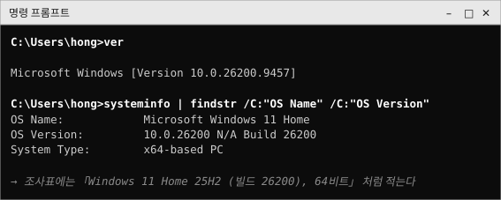
ver 과 systeminfoOS Name 대신
「OS 이름」, OS Version 대신 「OS 버전」으로 나옵니다.
그때는 findstr /C:"OS 이름" /C:"OS 버전" 으로 바꾸어 칩니다.
⊞ + R 에 winver 를 입력해도 같은 내용을 창으로 볼 수 있습니다.절차 2 — 사용 언어와 형상 관리 도구 확인
거의 모든 개발 도구는 --version 또는 -version 을
붙이면 자기 판을 알려 줍니다. 이 규칙 하나만 알면 처음 보는 도구도 조사할 수 있습니다.
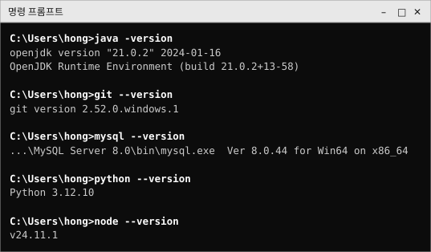
--versionjava 만 -version(붙임표 하나)이고
나머지는 --version(붙임표 둘)입니다. 자바가 오래된 규칙을 쓰기 때문입니다.
설치되어 있지 않으면 오류 줄이 나오는데, 그것도 조사 결과입니다.
조사표에는 빈칸이 아니라 「없음」이라고 적습니다.절차 3 — 망 구성 확인
ipconfig 는 이 PC 가 어떤 주소를 쓰고 있는지 알려 줍니다.
주소가 192.168. 이나 10. 으로 시작하면 내부망입니다.
내부망이면 밖에서 이 PC 로 바로 들어올 수 없습니다.
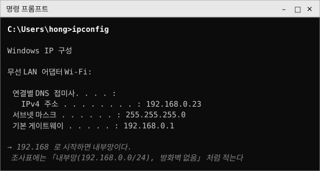
ipconfig절차 4 — 조사표로 옮기기
확인한 값을 일곱 줄에 맞추어 적습니다. 내 PC 를 조사하면 대개 다음과 같은 모양이 됩니다. IDE 줄이 채워지는 것이 서버 조사와 다른 점입니다. 개발 도구는 서버가 아니라 개발자의 PC 에 설치되기 때문입니다.
| 조사 항목 | 확인 방법 | 적은 값 (예) |
|---|---|---|
| 운영체제 | ver · systeminfo |
Windows 11 Home 25H2 (빌드 26200), 64비트 |
| 데이터베이스 | mysql --version |
MySQL 8.0.44 (내 PC 는 도구와 서버가 같으므로 이 값이 맞습니다) |
| 미들웨어 | 설치 목록 확인 | 없음 |
| 사용 언어 | java -version 등 |
Java 21.0.2, Python 3.12.10, Node.js 24.11.1 |
| IDE | 설치된 프로그램 목록 | 이클립스, Visual Studio Code |
| 형상 관리 도구 | git --version |
Git 2.52.0 |
| 네트워크 환경 | ipconfig |
내부망 192.168.0.0/24, 방화벽 없음 |
1.4 예시 ② — 원격 서버 한 대 조사하기
조사 도구로 초안을 얻고, 항목마다 원래 명령으로 되짚어 확인할 수 있다.
실무에서 조사하는 대상은 내 PC 가 아니라 운영 중인 서버입니다. 서버는 대개 전산실에 있고 화면과 키보드가 붙어 있지 않습니다. 그래서 원격 접속으로 들어가 명령을 칩니다. 이 절에서는 강사가 올려 둔 서버 한 대(A팀 환경)를 함께 조사합니다.
192.168.0.10)
접속 포트2201
계정survey
비밀번호강사가 안내합니다
이 서버는 강사가 어떻게 올리나 — 도커 코드 보기
훈련생은 읽지 않아도 됩니다. 조사 대상 서버가 어떻게 준비되는지
궁금할 때만 펴 보십시오. 아래 두 파일을 같은 폴더에 두고
그 폴더에서 docker compose up -d --build 를 실행하면
지금 조사할 서버 한 대가 올라옵니다.
was-a)와
그 뒤의 데이터베이스 한 대입니다. 실습 1-1 의 네 환경은 이것과 다른 파일로
올립니다. 데이터베이스를 일부러 5.7 로 두었기 때문에,
접속 도구(8.0)와 판이 달라져 1.4.4 의 함정이 그대로 재현됩니다.docker compose down 으로 내리고,
실습 1-1 의 네 환경을 올린다. ② 처음부터 네 환경만 올리고 예시도 A팀(2201)으로 진행한다.
②가 간단하며, 이 파일은 예시만 빠르게 보여 줄 때 씁니다.docker-compose.yml — 서버 한 대와 데이터베이스 한 대의 정의.
# 예시 ② — 원격 서버 «한 대» 조사하기 (1.4절)
#
# 교안 1.4 의 화면을 그대로 재현하는 환경이다. 서버 한 대와 그 뒤의
# 데이터베이스 한 대만 올린다. 실습 1-1 의 네 환경과 달리 강사가 설명하며
# 함께 조사하는 용도이므로, 답이 교안에 이미 적혀 있다.
#
# Ubuntu 22.04 · Apache Tomcat 8.5 · Java 8 · MySQL 5.7 · Git
#
# 쓰는 법 — 이 파일과 survey.sh 를 같은 폴더에 두고
#
# docker compose up -d --build 환경을 올린다 (처음 한 번 오래 걸린다)
# ipconfig 나온 주소를 칠판에 적는다
# docker compose down 수업이 끝나면 내린다
#
# 훈련생 접속 (강사 PC 주소가 192.168.0.10 인 경우)
# ssh survey@192.168.0.10 -p 2201 계정 survey · 비밀번호 ncs2026
#
# 주의 — 수업용 설정이다. 비밀번호가 단순하므로 강의실 안쪽 망에서만 쓰고
# 수업이 끝나면 내린다. 인터넷에 포트를 열지 않는다.
name: ncs-example-one
services:
# ── 조사 대상 서버 ──────────────────────────────────────────
was:
build:
context: .
# 바탕 이미지는 아직 지원되는 것으로 고른다 — 지원이 끝난 배포판은
# apt 저장소가 사라져 패키지를 받을 수 없다(Debian 11 에서 겪었다).
dockerfile_inline: |
FROM tomcat:8.5-jdk8-temurin-jammy
# 원격 접속(ssh)과 조사에 쓰는 명령들을 넣는다.
RUN apt-get update \
&& apt-get install -y --no-install-recommends \
openssh-server procps iproute2 net-tools less \
default-mysql-client git \
&& rm -rf /var/lib/apt/lists/* \
&& mkdir -p /run/sshd \
&& useradd -m -s /bin/bash survey \
&& echo 'survey:ncs2026' | chpasswd \
&& sed -i 's/^#\?PermitRootLogin.*/PermitRootLogin no/' \
/etc/ssh/sshd_config \
&& sed -i 's/^#\?PasswordAuthentication.*/PasswordAuthentication yes/' \
/etc/ssh/sshd_config
# 훈련생이 맨 먼저 돌리는 조사 도구
COPY survey.sh /usr/local/bin/survey
RUN chmod +x /usr/local/bin/survey
EXPOSE 22
# 웹 서버를 뒤로 띄우고 ssh 를 앞에서 돌린다
CMD ["/bin/sh", "-c", \
"catalina.sh run >/tmp/app.log 2>&1 & exec /usr/sbin/sshd -D -e"]
container_name: example-was
hostname: was-a
ports:
- "2201:22" # 훈련생이 ssh 로 들어오는 자리
- "18001:8080" # 웹. 흔한 8080 을 피해 18001 로 내보낸다
depends_on: [db]
# ── 그 뒤의 데이터베이스 ────────────────────────────────────
# 일부러 서버를 5.7 로 둔다. 접속 도구는 8.0 대이므로
# 「도구의 판」과 「서버의 판」이 달라지고, 1.4.4 의 함정이 재현된다.
db:
image: mysql:5.7
container_name: example-db
hostname: db-a
environment:
MYSQL_ROOT_PASSWORD: bookrent
MYSQL_DATABASE: bookrent
survey.sh — 훈련생이 접속해서 맨 먼저 돌리는 조사 도구.
#!/bin/sh
# 운행환경 조사 도구 — 일곱 항목을 한 번에 훑는다.
#
# 손으로 하나씩 치면 빠뜨린다. 먼저 이것을 돌려 초안을 얻고,
# 그다음 항목마다 다시 확인해서 채운다. 초안을 그대로 내면 안 된다 —
# 이 도구가 「모름」 이나 「없음」 이라고 답하는 자리가 곧 직접 확인할 자리다.
#
# survey
#
# 어떤 환경에서도 돌아가도록 설치되지 않은 명령은 건너뛴다.
have() { command -v "$1" >/dev/null 2>&1; }
row() { printf '%s%s\n' "$1" "$2"; }
echo "===== 운행환경 조사 : $(hostname) : $(date '+%Y-%m-%d %H:%M') ====="
# 1. 운영체제
if [ -r /etc/os-release ]; then
. /etc/os-release
row "운영체제 " "${PRETTY_NAME:-$NAME $VERSION_ID}"
else
row "운영체제 " "$(uname -sr)"
fi
# 2. 데이터베이스 — 이 서버에 깔린 «접속 도구» 를 찾는다.
# 접속 도구와 DB 서버는 다른 프로그램이고 판도 다르다.
# 서버의 판은 서버에 직접 물어봐야 하며 여기서는 알 수 없다.
db="없음"
if have psql; then
db="접속 도구 psql $(psql --version 2>/dev/null | awk '{print $3}')"
elif have mysql; then
db="접속 도구 $(mysql --version 2>/dev/null | tr -d , | awk '{print $1, $2, $3, $4, $5}')"
elif have mariadb; then
db="접속 도구 $(mariadb --version 2>/dev/null | tr -d , | awk '{print $1, $2, $3, $4, $5}')"
fi
row "데이터베이스 " "$db"
row " " " ↳ 서버의 판은 DB 서버에 직접 물어볼 것 (도구 판과 다르다)"
# 3. 미들웨어 — 무엇이 웹 요청을 받는가
mw="모름 — 직접 확인할 것"
if [ -x /usr/local/tomcat/bin/version.sh ]; then
mw="$(/usr/local/tomcat/bin/version.sh 2>/dev/null | sed -n 's/^Server version: *//p')"
fi
have httpd && mw="$(httpd -v 2>/dev/null | sed -n 's/^Server version: *//p')"
have apache2 && mw="$(apache2 -v 2>/dev/null | sed -n 's/^Server version: *//p')"
have nginx && mw="$(nginx -v 2>&1 | sed 's|.*nginx/|nginx |')"
have gunicorn && mw="Gunicorn $(gunicorn --version 2>/dev/null | tr -d '()' | awk '{print $NF}')"
row "미들웨어 " "$mw"
# 4. 사용 언어
lang=""
have java && lang="$lang Java $(java -version 2>&1 | sed -n '1s/.*"\(.*\)".*/\1/p');"
have python3 && lang="$lang Python $(python3 --version 2>&1 | awk '{print $2}');"
have php && lang="$lang PHP $(php -v 2>/dev/null | sed -n '1s/^PHP \([0-9.]*\).*/\1/p');"
have node && lang="$lang Node.js $(node --version 2>/dev/null);"
[ -z "$lang" ] && lang=" 모름 — 직접 확인할 것"
row "사용 언어 " "$(echo "$lang" | sed 's/^ //; s/;$//')"
# 5. IDE — 서버에는 없는 것이 정상이다
row "IDE " "서버에 없음 — 개발 PC 에서 확인할 것"
# 6. 형상 관리 도구
scm="없음"
have git && scm="Git $(git --version 2>/dev/null | awk '{print $3}')"
have svn && scm="Subversion $(svn --version --quiet 2>/dev/null)"
row "형상관리 " "$scm"
# 7. 네트워크 환경
row "네트워크 " "주소 $(hostname -i 2>/dev/null || echo 모름)"
if have ss; then
ports=$(ss -ltn 2>/dev/null | awk 'NR>1 && $4 !~ /127.0.0.11/{print $4}' | sed 's/.*://' | sort -un | tr '\n' ' ')
row " " " 열린 포트 $ports"
fi
echo "====================================================="
echo "「모름」 과 「없음」 이 적힌 줄은 직접 확인해서 채울 것."
survey.sh 를 옮겨 적을 때는
줄 끝을 LF 로 두어야 합니다. Windows 편집기에서 CRLF 로 저장하면
컨테이너 안에서 no such file or directory 가 나며 실행되지 않습니다.
VS Code 오른쪽 아래의 CRLF 를 눌러 LF 로 바꿉니다.1.4.1 접속하기
두 가지 방법이 있습니다. 설치가 필요 없는 첫 번째 방법을 권합니다.
방법 1 — Windows 기본 ssh
Windows 10 · 11 에는 원격 접속 도구가 기본으로 들어 있습니다.
명령 프롬프트에 다음과 같이 입력합니다.
-p 뒤의 숫자가 팀마다 다른 포트입니다.
ssh survey@192.168.0.10 -p 2201
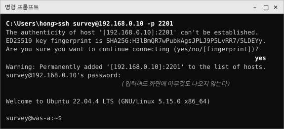
처음 접속하면 The authenticity of host ... can't be established. 라는
물음이 나옵니다. 「이 서버가 처음 보는 서버인데 계속할까요」 라는 뜻입니다.
yes 를 입력하고 Enter 를 누릅니다. 두 번째부터는 나오지 않습니다.
그다음 비밀번호를 묻습니다. 입력해도 화면에 아무것도 나타나지 않습니다. 지워진 것이 아니라 보안을 위해 감추는 것이므로, 그대로 끝까지 치고 Enter 를 누릅니다.
접속이 되면 줄 맨 앞이 C:\Users\hong> 에서
survey@was-a:~$ 로 바뀝니다.
이 줄이 바뀌었다는 것이 「지금부터 치는 명령은 내 PC 가 아니라 서버에서 돌아간다」
는 표시입니다.
방법 2 — PuTTY
PuTTY 를 쓰는 경우에는 아래 창에서 세 군데를 채우고 Open 을 누릅니다.
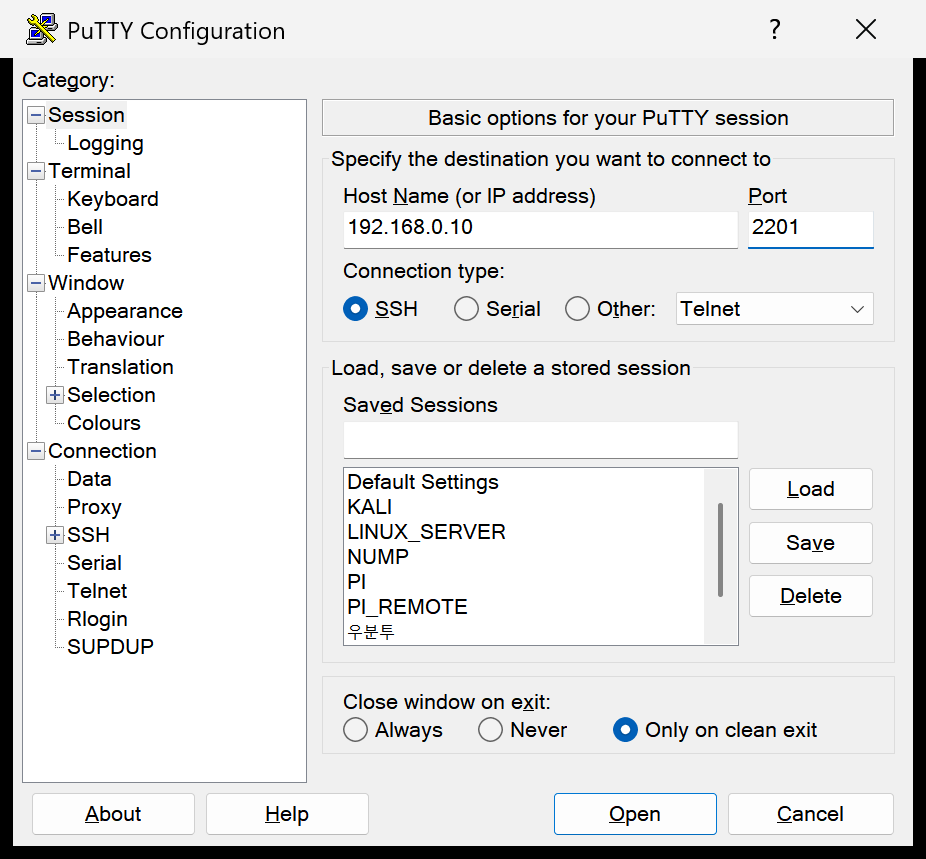
| 칸 | 입력할 값 | 설명 |
|---|---|---|
| Host Name | 192.168.0.10 |
강사가 알려 준 주소 |
| Port | 2201 |
팀마다 다릅니다. 기본값 22 를 지우고 넣습니다 |
| Connection type | SSH | 기본값입니다. 바뀌어 있으면 SSH 로 되돌립니다 |
검은 창이 열리면 login as: 에 survey 를 입력하고,
이어서 비밀번호를 입력합니다. 이 또한 화면에 나타나지 않습니다.
접속이 되지 않을 때 — 세 가지가 대부분입니다. 오류 문구를 보고 어느 경우인지 가려 냅니다.
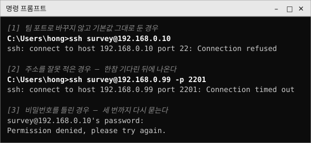
| 나온 문구 | 뜻 | 할 일 |
|---|---|---|
Connection refused | 주소는 맞는데 그 포트가 닫혀 있다 | -p 뒤의 팀 포트를 빠뜨렸는지 확인 |
Connection timed out | 그 주소에 아무도 없다 | 주소의 숫자를 다시 확인. 오래 기다린 뒤에 나온다 |
Permission denied | 계정이나 비밀번호가 틀렸다 | 계정은 survey. 한/영 상태와 Caps Lock 확인 |
1.4.2 조사 도구를 먼저 돌린다
접속했다고 해서 곧바로 일곱 항목을 하나씩 치기 시작하면 안 됩니다. 실무에서도 그렇게 하지 않습니다. 이유는 두 가지입니다.
- 빠뜨립니다. 일곱 항목을 기억에 의존해 치다 보면 한두 줄이 빈 채로 넘어갑니다. 빈칸은 그대로 감점입니다.
- 시간이 모자랍니다. 서버가 한 대면 손으로 해도 되지만, 실무에서는 수십 대를 조사합니다. 손으로는 끝나지 않습니다.
그래서 먼저 한 번에 훑는 도구를 돌려 초안을 얻고,
그다음 항목마다 되짚어 확인합니다.
이 서버에는 survey 라는 조사 도구가 미리 설치되어 있습니다.
접속한 창에 다음과 같이 입력합니다.
survey
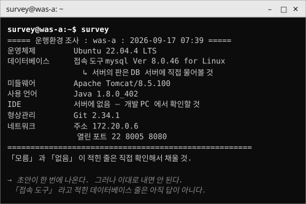
도구가 스스로 끝내지 못하는 자리는 다음 셋입니다. 왜 그런지 알아 두어야 다른 현장에서도 같은 판단을 할 수 있습니다.
| 도구의 답 | 왜 도구가 끝내지 못하는가 | 사람이 할 일 |
|---|---|---|
| 데이터베이스 「접속 도구 …」 |
이 서버에 있는 것은 접속 도구뿐이다. 데이터베이스 서버는 다른 컴퓨터에서 돌고 있다 | DB 서버에 직접 물어본다 (1.4.4) |
| IDE 「서버에 없음」 |
개발 도구는 서버가 아니라 개발자의 PC 에 설치된다 | 개발팀에 묻거나 개발 PC 에서 확인한다 |
| 네트워크 열린 포트만 |
방화벽·IDS 같은 장비는 서버 안에서 보이지 않는다 | 망 담당자에게 확인한다. 없으면 「없음」 |
1.4.3 항목별로 되짚어 확인하기
초안이 맞는지 항목마다 원래 명령으로 다시 확인합니다. 도구가 어디에서 그 값을 가져왔는지 알게 되므로, 조사 도구가 없는 서버를 만나도 혼자 조사할 수 있습니다.
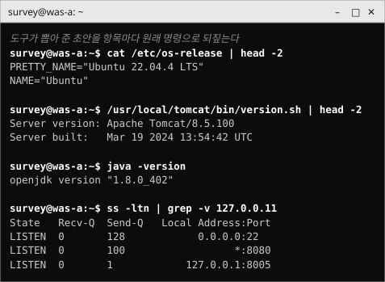
| 조사 항목 | 서버에서 치는 명령 | 읽는 법 |
|---|---|---|
| 운영체제 | cat /etc/os-release |
리눅스는 이 파일에 자기 정보를 적어 둔다.
PRETTY_NAME 줄을 쓴다 |
| 미들웨어 | /usr/local/tomcat/bin/version.sh |
Server version 줄. 제품 이름과 판이 함께 나온다 |
| 사용 언어 | java -version |
1.8.0 이 곧 Java 8 이다 |
| 형상 관리 | git --version · svn --version |
둘 다 없으면 「없음」. 그것이 곧 문제점이 된다 |
| 네트워크 | hostname -i · ss -ltn |
ss 는 열려 있는 포트 목록이다.
22 는 원격 접속, 8080 은 웹이다 |
22 는 원격 접속, 80 과 8080 은 웹,
3306 은 MySQL 이 주로 씁니다.
ss 결과에 127.0.0.11 이 보이면 그것은
실습 환경이 내부에서 쓰는 주소이므로 조사 대상이 아닙니다.1.4.4 데이터베이스 — 도구의 판과 서버의 판
일곱 항목 가운데 가장 많이 틀리는 곳입니다. 먼저 흔히 하는 대로 해 보고, 왜 틀리는지 확인합니다.
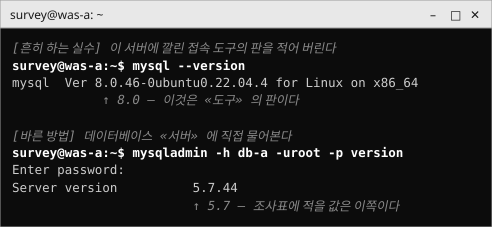
mysql --version 이 알려 주는 8.0 은
이 서버에 깔린 접속 도구의 판입니다.
우리가 조사표에 적어야 할 것은 데이터를 실제로 보관하고 있는
데이터베이스 서버의 판, 곧 5.7 입니다.
서버에 직접 물어보는 명령은 데이터베이스 종류마다 다릅니다.
-h 뒤가 데이터베이스 서버의 이름입니다.
| 데이터베이스 | 서버에 직접 물어보는 명령 |
|---|---|
| MySQL | mysqladmin -h db-a -uroot -p version |
| MariaDB | mariadb --skip-ssl -h db-c -uroot -p -e "select version();" |
| PostgreSQL | psql -h db-b -U postgres -c "select version();" |
TLS/SSL error: SSL is required 라는 줄이 나옵니다.
이때 --skip-ssl 을 붙입니다.
이것 자체가 조사 결과입니다 — 「현행 DB 서버가 오래되어 암호화 연결을 지원하지 않음」은
뒤에서 문제점으로 적을 거리가 됩니다.1.4.5 근거 남기고 접속 끊기
조사표는 혼자 제출하지 않습니다. 어디서 나온 값인지 보여 주는 화면이 함께 갑니다.
⊞ + Shift + S 로 화면을 잘라 저장하거나, 창의 글자를 끌어 선택해 복사해 둡니다.
파일 이름은 근거_01_조사도구.png 처럼 번호와 내용을 함께 적습니다.
조사가 끝나면 exit 를 입력해 접속을 끊습니다.
창을 그냥 닫아도 되지만, 접속을 정리하고 나오는 것이 바른 습관입니다.
exit
지금까지 조사한 A팀 서버의 결과를 정리하면 다음과 같습니다. 데이터베이스 줄만 도구의 답과 다르다는 점을 확인하십시오.
| 조사 항목 | A팀 서버 조사 결과 | 근거 |
|---|---|---|
| 운영체제 | Ubuntu 22.04.4 LTS | cat /etc/os-release |
| 데이터베이스 | MySQL 5.7.44 | mysqladmin ... version (도구는 8.0 이라고 답했다) |
| 미들웨어 | Apache Tomcat 8.5.100 | version.sh |
| 사용 언어 | Java 8 (1.8.0_402), 서블릿 · JSP 기반 | java -version |
| IDE | 서버에 없음 — 개발 PC 에서 확인 | 조사 도구 안내 |
| 형상 관리 도구 | Git 2.34.1 | git --version |
| 네트워크 환경 | 내부망, 22 · 8080 포트만 개방 | ss -ltn |
목적 — 앞의 예시와 같은 절차로, 다른 환경을 혼자 조사합니다. 팀마다 배정된 서버가 다르므로 답도 다릅니다. 옆 팀의 답을 옮겨 적을 수 없고, 발표 때 서로 비교할 거리가 생깁니다.
준비물 — PC, 강사가 알려 준 주소 · 팀 포트 · 계정 survey
배정 — 자기 팀의 포트와 데이터베이스 서버 이름을 확인합니다. 조사 결과는 적혀 있지 않습니다. 직접 알아내는 것이 실습입니다.
| 팀 | 접속 포트 | DB 서버 이름 | 미리 알려 주는 것 |
|---|---|---|---|
| A | 2201 | db-a |
예시에서 함께 조사한 환경입니다 (자바 · Tomcat) |
| B | 2202 | db-b |
미들웨어가 Tomcat 이 아닙니다. 형상 관리 도구도 Git 이 아닙니다 |
| C | 2203 | db-c |
사용 언어가 자바가 아닙니다. DB 접속에서 암호화 오류를 만나게 됩니다 |
| D | 2204 | db-d |
일곱 줄 가운데 「없음」이 되는 줄이 하나 있습니다 |
절차 1. 접속하고 서버 이름 확인
ssh survey@<주소> -p <팀 포트> 로 접속합니다.
들어가면 hostname 을 쳐서 어느 서버에 들어왔는지 먼저 확인합니다.
이 이름을 조사표 맨 위에 적습니다.
절차 2. 조사 도구를 먼저 돌린다
survey 를 입력해 초안을 얻습니다. 이 화면을 캡처해
근거_01_조사도구.png 로 저장합니다.
이 초안을 그대로 제출하지 않습니다.
절차 3. 도구의 답을 세 무리로 나눈다
초안을 보고 다음과 같이 표시합니다. 무엇을 더 해야 하는지가 여기서 정해집니다.
- 판까지 나온 줄 — 절차 4 에서 원래 명령으로 되짚기만 하면 됩니다.
- 「접속 도구」라고 나온 줄 — 절차 5 에서 서버에 직접 물어봐야 합니다.
- 「모름」 · 「없음」 · 「서버에 없음」인 줄 — 절차 6 에서 사람에게 묻거나 없다고 확정해야 합니다.
절차 4. 항목별로 되짚어 확인
1.4.3 의 명령을 씁니다. 다만 미들웨어는 팀마다 프로그램이 다르므로
아래에서 자기 환경에 맞는 것을 찾아 칩니다.
survey 가 알려 준 프로그램 이름을 보고 고르면 됩니다.
| 초안에 나온 이름 | 판을 확인하는 명령 |
|---|---|
| Apache Tomcat | /usr/local/tomcat/bin/version.sh |
| Apache/2.x | apache2 -v |
| nginx | nginx -v |
| Gunicorn | gunicorn --version |
사용 언어와 형상 관리 도구도 마찬가지입니다.
java -version 이 듣지 않으면
python3 --version · php -v · node --version 을,
git --version 이 듣지 않으면 svn --version 을 쳐 봅니다.
command not found 가 나옵니다. 잘못한 것이 아닙니다.
「이 서버에는 그것이 없다」는 조사 결과를 얻은 것입니다.
형상 관리 도구가 Git 도 Subversion 도 없다면 조사표에 「없음」이라고 적고,
그것을 문제점으로 적어 둡니다.절차 5. 데이터베이스 서버에 직접 물어보기
1.4.4 의 표에서 자기 환경에 맞는 명령을 골라 칩니다.
-h 뒤에는 위 배정표의 DB 서버 이름을 넣습니다.
비밀번호는 강사가 안내합니다.
결과 화면을 근거_02_DB서버판.png 로 저장합니다.
절차 6. 사람에게 물어야 하는 줄 처리
IDE 는 서버에 없습니다. 「개발 PC 에서 확인 필요」라고 적거나,
강사에게 물어 답을 받습니다.
네트워크 환경은 hostname -i 와 ss -ltn 으로
주소와 열린 포트까지 적고, 방화벽·IDS 는 「확인 필요」 또는 「없음」으로 적습니다.
절차 7. 접속 끊기
exit 를 입력합니다.
절차 8. 조사표 작성
1.5 의 서식에 맞추어 일곱 줄을 채웁니다.
일곱 줄 모두 판(버전)이 적혀 있는지 마지막으로 확인합니다.
제출물 — 팀 환경 운행환경 조사표 1부(일곱 줄) + 근거 화면 2장 이상
스스로 확인 — 다음 셋을 말할 수 있으면 끝난 것입니다. ① 일곱 줄에 모두 값과 판이 있는가 ② 데이터베이스 줄이 서버가 답한 값인가 ③ 각 줄의 값이 어느 명령에서 나왔는지 말할 수 있는가
cat /etc/os-release, java -version 처럼
직접 확인하는 것이 기본이고, 오늘 쓴 survey 처럼
한 번에 훑는 스크립트를 먼저 돌리는 것도 실제로 하는 방식입니다.
서버가 수십 대를 넘어가면 Ansible 같은 도구로 한 번에 모으고,
조직 차원에서는 CMDB(구성관리 데이터베이스)에 등록해 계속 갱신합니다.
상용은 ServiceNow, 공개 도구로는 GLPI · Snipe-IT 가 있습니다.실습 환경은 어떻게 만들어졌나 — 도커 구성 보기
여기를 펴면 조금 전 조사한 네 서버를 무엇으로 만들었는지 볼 수 있습니다. 실습 1-1 을 끝낸 뒤에 열어 보십시오. 먼저 보면 답이 적혀 있어 조사할 것이 남지 않습니다.
실행에 쓰는 코드 — 아래 네 파일을 같은 폴더에 두고
그 폴더에서 docker compose up -d --build 를 실행합니다.
강사 작업 사본에는 guides/lab/remote-survey/ 에 그대로 들어 있습니다.
docker-compose.yml — 네 환경의 정의. 포트와 바탕 이미지를 여기서 정한다.
# 원격 조사 실습 — 팀마다 다른 «현행 시스템»
#
# 강사 PC 한 대에서 올리고, 훈련생은 자기 PC 의 ssh 나 PuTTY 로 들어와 조사한다.
# 네 환경이 서로 다르다. 미들웨어도 언어도 형상관리도 다르므로
# 옆 팀 답을 옮겨 적을 수 없고, 발표 때 비교할 거리가 생긴다.
#
# docker compose up -d --build 환경을 올린다 (처음 한 번 오래 걸린다)
# docker compose ps 무엇이 떠 있는지 본다
# ipconfig 이 주소를 칠판에 적는다
# docker compose down 수업이 끝나면 내린다
#
# 훈련생 접속 (강사 PC 주소가 192.168.0.10 인 경우)
# A팀 ssh survey@192.168.0.10 -p 2201
# B팀 ssh survey@192.168.0.10 -p 2202
# C팀 ssh survey@192.168.0.10 -p 2203
# D팀 ssh survey@192.168.0.10 -p 2204
#
# 주의 — 수업용 설정이다. 비밀번호가 단순하므로 강의실 안쪽 망에서만 쓰고
# 수업이 끝나면 내린다. 인터넷에 열어 두지 않는다.
name: ncs-remote-survey
services:
# ── A팀 : 오래된 자바 웹 (Tomcat · Java 8 · MySQL 5.7 · Git)
team-a:
build:
context: .
args:
BASE: tomcat:8.5-jdk8-temurin-jammy
EXTRA: default-mysql-client git
START: catalina.sh run
container_name: survey-a
hostname: was-a
ports: ["2201:22", "18001:8080"]
depends_on: [db-a]
db-a:
image: mysql:5.7
container_name: survey-a-db
hostname: db-a
environment:
MYSQL_ROOT_PASSWORD: bookrent
MYSQL_DATABASE: bookrent
# ── B팀 : 파이썬 웹 (Gunicorn · Python 3.11 · PostgreSQL 14 · Subversion)
team-b:
build:
context: .
args:
BASE: python:3.11-slim
EXTRA: postgresql-client subversion
PIP: gunicorn
START: gunicorn -b 0.0.0.0:8080 app:app --chdir /app
container_name: survey-b
hostname: was-b
ports: ["2202:22", "18002:8080"]
volumes:
- ./app-python:/app:ro
depends_on: [db-b]
db-b:
image: postgres:14
container_name: survey-b-db
hostname: db-b
environment:
POSTGRES_PASSWORD: bookrent
POSTGRES_DB: bookrent
# ── C팀 : PHP 웹 (Apache httpd · PHP 8.2 · MariaDB 10.6 · Git)
team-c:
build:
context: .
args:
BASE: php:8.2-apache
EXTRA: mariadb-client git
START: apache2-foreground
container_name: survey-c
hostname: was-c
ports: ["2203:22", "18003:80"]
depends_on: [db-c]
db-c:
image: mariadb:10.6
container_name: survey-c-db
hostname: db-c
environment:
MARIADB_ROOT_PASSWORD: bookrent
MARIADB_DATABASE: bookrent
# ── D팀 : Node 웹 (Nginx · Node.js 20 · MySQL 8.0 · 형상관리 없음)
team-d:
build:
context: .
args:
BASE: node:20-bookworm-slim
EXTRA: nginx default-mysql-client
START: nginx
container_name: survey-d
hostname: was-d
ports: ["2204:22", "18004:80"]
depends_on: [db-d]
db-d:
image: mysql:8.0
container_name: survey-d-db
hostname: db-d
environment:
MYSQL_ROOT_PASSWORD: bookrent
MYSQL_DATABASE: bookrent
Dockerfile — 환경마다 공통으로 들어가는 것. ssh 서버와 조사 도구를 넣는다.
# 원격 조사 실습용 «현행 시스템» 서버
#
# 훈련생 PC 에는 아무것도 깔지 않는다. 강사 PC 에서 이 서버들을 올려 두면
# 훈련생은 Windows 에 기본으로 들어 있는 ssh 나 PuTTY 로 들어와 조사한다.
#
# 바탕 이미지는 아직 지원되는 것으로 고른다 — 지원이 끝난 배포판은
# apt 저장소가 사라져 패키지를 받을 수 없다(Debian 11 에서 겪었다).
#
# 팀마다 다른 환경을 주기 위해 BASE · EXTRA · START 를 밖에서 넣는다.
ARG BASE=tomcat:8.5-jdk8-temurin-jammy
FROM ${BASE}
ARG EXTRA=""
ARG PIP=""
ARG START="true"
ENV START=${START}
RUN apt-get update \
&& apt-get install -y --no-install-recommends \
openssh-server procps iproute2 net-tools less ${EXTRA} \
&& rm -rf /var/lib/apt/lists/* \
&& mkdir -p /run/sshd \
&& useradd -m -s /bin/bash survey \
&& echo 'survey:ncs2026' | chpasswd \
&& sed -i 's/^#\?PermitRootLogin.*/PermitRootLogin no/' /etc/ssh/sshd_config \
&& sed -i 's/^#\?PasswordAuthentication.*/PasswordAuthentication yes/' /etc/ssh/sshd_config
# 파이썬 환경에서만 쓰는 것 (예: gunicorn)
RUN if [ -n "$PIP" ]; then pip install --no-cache-dir $PIP; fi
# 조사 도구 — 훈련생이 맨 먼저 돌린다
COPY survey.sh /usr/local/bin/survey
RUN chmod +x /usr/local/bin/survey
EXPOSE 22
# 응용 서버를 뒤로 띄우고 ssh 를 앞에서 돌린다
CMD ["/bin/sh", "-c", "$START >/tmp/app.log 2>&1 & exec /usr/sbin/sshd -D -e"]
survey.sh — 훈련생이 접속해서 맨 먼저 돌리는 조사 도구.
#!/bin/sh
# 운행환경 조사 도구 — 일곱 항목을 한 번에 훑는다.
#
# 손으로 하나씩 치면 빠뜨린다. 먼저 이것을 돌려 초안을 얻고,
# 그다음 항목마다 다시 확인해서 채운다. 초안을 그대로 내면 안 된다 —
# 이 도구가 「모름」 이나 「없음」 이라고 답하는 자리가 곧 직접 확인할 자리다.
#
# survey
#
# 어떤 환경에서도 돌아가도록 설치되지 않은 명령은 건너뛴다.
have() { command -v "$1" >/dev/null 2>&1; }
row() { printf '%s%s\n' "$1" "$2"; }
echo "===== 운행환경 조사 : $(hostname) : $(date '+%Y-%m-%d %H:%M') ====="
# 1. 운영체제
if [ -r /etc/os-release ]; then
. /etc/os-release
row "운영체제 " "${PRETTY_NAME:-$NAME $VERSION_ID}"
else
row "운영체제 " "$(uname -sr)"
fi
# 2. 데이터베이스 — 이 서버에 깔린 «접속 도구» 를 찾는다.
# 접속 도구와 DB 서버는 다른 프로그램이고 판도 다르다.
# 서버의 판은 서버에 직접 물어봐야 하며 여기서는 알 수 없다.
db="없음"
if have psql; then
db="접속 도구 psql $(psql --version 2>/dev/null | awk '{print $3}')"
elif have mysql; then
db="접속 도구 $(mysql --version 2>/dev/null | tr -d , | awk '{print $1, $2, $3, $4, $5}')"
elif have mariadb; then
db="접속 도구 $(mariadb --version 2>/dev/null | tr -d , | awk '{print $1, $2, $3, $4, $5}')"
fi
row "데이터베이스 " "$db"
row " " " ↳ 서버의 판은 DB 서버에 직접 물어볼 것 (도구 판과 다르다)"
# 3. 미들웨어 — 무엇이 웹 요청을 받는가
mw="모름 — 직접 확인할 것"
if [ -x /usr/local/tomcat/bin/version.sh ]; then
mw="$(/usr/local/tomcat/bin/version.sh 2>/dev/null | sed -n 's/^Server version: *//p')"
fi
have httpd && mw="$(httpd -v 2>/dev/null | sed -n 's/^Server version: *//p')"
have apache2 && mw="$(apache2 -v 2>/dev/null | sed -n 's/^Server version: *//p')"
have nginx && mw="$(nginx -v 2>&1 | sed 's|.*nginx/|nginx |')"
have gunicorn && mw="Gunicorn $(gunicorn --version 2>/dev/null | tr -d '()' | awk '{print $NF}')"
row "미들웨어 " "$mw"
# 4. 사용 언어
lang=""
have java && lang="$lang Java $(java -version 2>&1 | sed -n '1s/.*"\(.*\)".*/\1/p');"
have python3 && lang="$lang Python $(python3 --version 2>&1 | awk '{print $2}');"
have php && lang="$lang PHP $(php -v 2>/dev/null | sed -n '1s/^PHP \([0-9.]*\).*/\1/p');"
have node && lang="$lang Node.js $(node --version 2>/dev/null);"
[ -z "$lang" ] && lang=" 모름 — 직접 확인할 것"
row "사용 언어 " "$(echo "$lang" | sed 's/^ //; s/;$//')"
# 5. IDE — 서버에는 없는 것이 정상이다
row "IDE " "서버에 없음 — 개발 PC 에서 확인할 것"
# 6. 형상 관리 도구
scm="없음"
have git && scm="Git $(git --version 2>/dev/null | awk '{print $3}')"
have svn && scm="Subversion $(svn --version --quiet 2>/dev/null)"
row "형상관리 " "$scm"
# 7. 네트워크 환경
row "네트워크 " "주소 $(hostname -i 2>/dev/null || echo 모름)"
if have ss; then
ports=$(ss -ltn 2>/dev/null | awk 'NR>1 && $4 !~ /127.0.0.11/{print $4}' | sed 's/.*://' | sort -un | tr '\n' ' ')
row " " " 열린 포트 $ports"
fi
echo "====================================================="
echo "「모름」 과 「없음」 이 적힌 줄은 직접 확인해서 채울 것."
app-python/app.py — B팀에만 올라가는 작은 파이썬 응용.
# B팀 서버가 돌리는 아주 작은 파이썬 웹 애플리케이션.
# 조사 실습에서 «무엇이 웹 요청을 받는가» 를 확인할 거리만 있으면 되므로
# 프레임워크 없이 WSGI 하나로 둔다.
def app(environ, start_response):
body = b"book rental service (python)\n"
start_response("200 OK", [("Content-Type", "text/plain; charset=utf-8"),
("Content-Length", str(len(body)))])
return [body]
survey.sh 를 옮겨 적을 때는
줄 끝을 LF 로 두어야 합니다. Windows 편집기에서 CRLF 로 저장하면
컨테이너 안에서 no such file or directory 가 나며 실행되지 않습니다.
메모장 대신 VS Code 를 쓰고 오른쪽 아래 CRLF 를 눌러 LF 로 바꿉니다.강사용 — 실습 서버 올리기
강사 PC 한 대에서 네 환경을 올립니다. Docker Desktop 이 설치되어 있어야 합니다. 환경을 만드는 코드는 바로 위 「도커 구성 보기」 상자에 들어 있습니다. 훈련생도 펴 볼 수 있으므로, 실습 1-1 을 끝낸 뒤에 열어 보도록 안내합니다. 먼저 펴 보면 조사해서 알아낼 것이 남지 않습니다.
수업이 끝나면 docker compose down 으로 내립니다.
계정은 survey, 비밀번호는 Dockerfile 에서 정합니다.
DB 비밀번호는 docker-compose.yml 에 있습니다.
강의실 안쪽 망 전용이므로 인터넷에 포트를 열지 마십시오.
네 환경의 실제 값 — 아래는 위 파일로 올렸을 때 나오는 값입니다. 훈련생 조사표를 채점할 때 씁니다.
| 팀 | 포트 | 운영체제 | 미들웨어 | 언어 | DB 서버 | 형상관리 |
|---|---|---|---|---|---|---|
| A | 2201 | Ubuntu 22.04.4 LTS | Apache Tomcat 8.5.100 | Java 1.8.0_402 | MySQL 5.7.44 | Git 2.34.1 |
| B | 2202 | Debian 13 (trixie) | Gunicorn 26.2.0 | Python 3.11.16 | PostgreSQL 14.24 | Subversion 1.14.5 |
| C | 2203 | Debian 13 (trixie) | Apache 2.4.68 | PHP 8.2.33 | MariaDB 10.6.28 | Git 2.47.3 |
| D | 2204 | Debian 12 (bookworm) | nginx 1.22.1 | Node.js 20.20.2 | MySQL 8.0.46 | 없음 |
일부러 넣어 둔 걸림돌 — 훈련생이 스스로 풀어야 하는 자리입니다.
- A · D팀 — 접속 도구는 8.0 대인데 서버는 5.7(A), 또는 접속 도구가 MariaDB 인데 서버는 MySQL(D)입니다. 도구의 판을 적으면 오답입니다.
- C팀 — MariaDB 11.8 접속 도구가 10.6 서버에 붙으면
TLS/SSL error: SSL is required가 납니다.--skip-ssl을 붙여야 합니다. - B팀 — 미들웨어가 Gunicorn, 형상 관리가 Subversion 입니다.
java -version과git --version이 모두 듣지 않습니다. - D팀 — 형상 관리 도구가 없습니다. 「없음」으로 적고 문제점으로 이어 적어야 만점입니다.
자원 — 환경 하나당 약 160MB(응용 96MB + DB 64~197MB)를 씁니다. 네 팀이면 대략 700MB, 다섯 팀으로 늘려도 1GB 안쪽입니다. 훈련생 20명이 동시에 접속해도 부담은 거의 없습니다.
팀을 늘리려면 — docker-compose.yml 의 team-d 묶음을
복사해 이름 · 포트 · BASE · EXTRA · START 만 바꿉니다.
바탕 이미지는 지원이 끝나지 않은 배포판으로 고릅니다 —
지원 종료된 것은 apt 저장소가 사라져 빌드가 실패합니다(Debian 11 에서 겪었습니다).
1.5 조사표 작성
수집이 끝났으면 제출 서식으로 옮깁니다. 실제 평가에서 제공되는 도서 대여 시스템을 조사한 예는 다음과 같습니다. 일곱 줄이 모두 채워져야 하며, 각 줄이 채점 항목에 대응합니다.

조사한 값이 조사표의 어느 줄로 가는지는 다음과 같습니다. 이 대응을 알면 옮겨 적는 일은 기계적으로 끝납니다.
| 조사표 항목 | 서버에서 친 명령 | 옮겨 적을 때 |
|---|---|---|
| 운영체제 | cat /etc/os-release |
배포판 이름과 판 (예: Ubuntu 22.04) |
| 데이터베이스 | mysqladmin -h <DB서버> -u root -p version |
서버가 답한 값. 도구 버전이 아님 (예: MySQL 5.7) |
| 미들웨어 | /usr/local/tomcat/bin/version.sh |
제품명과 버전 (예: Apache Tomcat 8.5) |
| 사용 언어 | java -version |
함께 쓰는 기술까지 (예: Java 서블릿, JSP 기반) |
| IDE | 서버에는 없음. 개발 PC 에서 확인 | 쓰는 것만 (예: 이클립스, 인텔리제이) |
| 형상 관리 도구 | git --version |
없으면 「없음」. 그것이 곧 문제점이 됨 |
| 네트워크 환경 | hostname -i · ss -ltnp |
망 구성과 열린 포트 (예: 내부망, 22 · 8080 개방) |
목적 — 수집한 값을 제출 서식에 맞추어 정리하고 산출물을 완성합니다.
준비물 — 실습 1-1 에서 조사한 값과 근거 자료, 스프레드시트
절차
- 스프레드시트를 실행하고 [그림 1-10] 와 같이 「구분 / 조사 결과 / 적는 요령」 세 개의 열을 작성합니다.
- 운영체제, 데이터베이스, 미들웨어, 사용 언어, IDE, 형상 관리 도구, 네트워크 환경의 일곱 행을 만듭니다.
- 위 대응표를 보며 실습 1-1 에서 조사한 값을 「조사 결과」 열로 옮깁니다. 평가에서는 제공된 현행 시스템의 값을 씁니다.
- 데이터베이스는 서버가 답한 값을 적었는지 다시 확인합니다.
mysql --version의 값을 적었다면 틀린 것입니다. - 서버에서 확인할 수 없는 IDE 는 개발 PC 쪽에서 확인해 적습니다.
- 일곱 줄 모두 판(버전)이 적혀 있는지 확인합니다. 해당 사항이 없으면 「없음」이라고 적고 빈칸으로 두지 않습니다.
- 문서 마지막에 근거 자료를 붙입니다.
근거_01_시스템요약.png는 그림으로 넣고,근거_02·근거_03은 필요한 줄만 인용합니다.
제출물 — 운행환경 조사표 1부 (일곱 줄, 판(버전) 포함) + 근거 자료
스스로 확인 — 일곱 줄이 모두 차 있고, 각 줄에 버전이 있으며, 조사 결과마다 어느 근거 자료에서 나온 값인지 말할 수 있으면 완성입니다.
네 산출물은 앞의 것이 뒤의 것의 재료가 됩니다. 조사표에서 유스케이스가 나오고, 유스케이스의 기본 흐름에서 시퀀스가 나오고, 시퀀스의 메시지에서 API 가 나옵니다. 순서를 건너뛰면 뒤에서 지어내게 됩니다.
2. 산출물 작성 실습
다섯 단계로 나누었습니다. 예제는 평가도구의 작업지시서에 실린 것을 그대로 씁니다. 이미 있는 도서 관리 시스템(등록 · 수정 · 삭제 · 조회)에 유저 인증과 도서 대여 두 가지를 더하는 경우입니다.
실제 평가에서는 현행 시스템 파일이 제공됩니다. 그 파일을 열어 조사하는 것이 첫 단계이므로, 이 교안의 조사 결과와 숫자가 다를 수 있습니다. 절차는 같습니다.
1완성 산출물의 확인
체크리스트 평가의 성격
평가자 체크리스트는 채점자가 항목을 하나씩 읽으며 있다 / 없다 를 표시하는 방식입니다. 「잘 썼다」 와 「대충 썼다」 를 나누지 않습니다. 있으면 5점이고 없으면 0점입니다.
그래서 이 교과에서 점수를 잃는 방식은 하나뿐입니다. 칸을 비우는 것입니다. 길게 쓸 필요가 없고, 대신 빠뜨리지 않아야 합니다.
쪽 순서
| 쪽 | 내용 | 채점 항목 |
|---|---|---|
| 1 | 표지 | — |
| 2 | 운행환경 조사 | ① 01 ~ 05 |
| 3 | 현행 시스템 기능 조사 | ① 의 밑바탕 |
| 4 | 요구사항과 목표 시스템 | ① 의 밑바탕 |
| 5 | 요구사항 명세서 | ② 의 밑바탕 |
| 6 | 유스케이스 다이어그램 | ② 06 ~ 08 |
| 7 ~ 9 | 유스케이스 명세서 (추가 기능 수만큼) | ② 09 · 10 |
| 10 ~ 12 | 시퀀스 다이어그램 | ③ 11 ~ 15 |
| 13 ~ 14 | API 명세서 | ③ 16 ~ 20 |
목적 — 내용을 채우기 전에 들어갈 자리를 먼저 만듭니다. 체크리스트 평가에서 잃는 점수는 「잘못 쓴 것」이 아니라 「없는 것」이므로, 자리를 먼저 잡아 두면 마지막에 무엇이 비었는지 한눈에 보입니다.
준비물 — 파워포인트 (한글 · 구글 슬라이드도 같습니다)
절차 1. 새 문서에 열네 쪽을 만든다
빈 슬라이드를 열고 Enter 또는 [새 슬라이드] 를 눌러 14쪽을 만듭니다.
아직 아무것도 쓰지 않습니다.
절차 2. 쪽 제목만 적는다
위의 쪽 순서 표를 보고 제목만 옮겨 적습니다.
유스케이스 명세서는 추가 기능 수만큼 늘어나므로 우선 세 쪽으로 잡습니다.
절차 3. 쪽마다 채점 항목 번호를 적는다
쪽의 오른쪽 아래 구석에 작은 글씨로 적습니다.
예를 들어 2쪽에는 ① 01~05, 6쪽에는 ② 06~08 입니다.
번호가 없는 쪽은 표지뿐이어야 합니다.
절차 4. 이름을 정해 저장한다
요구사항확인_홍길동.pptx 처럼 산출물 이름과 본인 이름을 함께 씁니다.
제출할 때 파일 이름만 보고도 무엇인지 알 수 있어야 합니다.
제출물 — 열네 쪽짜리 뼈대 파일 1부 (제목과 채점 번호만 적힌 상태)
스스로 확인 — ① 채점 항목 20개의 번호가 모두 어느 한 쪽에 적혀 있습니까 ② 번호가 적히지 않은 쪽은 표지뿐입니까 ③ 쪽 순서가 표와 같습니까
2운행환경 조사
무엇을 조사하는가
제공된 프로젝트 파일을 열어 무엇 위에서 돌아가고 있는지를 찾습니다. 추측하지 않고 파일 안에서 근거를 찾습니다.
어디를 보고 찾는가
| 찾을 것 | 볼 자리 | 예 |
|---|---|---|
| DBMS 와 판 | 접속 문자열 · 드라이버 파일 이름 | mysql-connector-j.jar · jdbc:mysql://… |
| 미들웨어 | 서버 폴더 · 설정 파일 | apache-tomcat-8.5.x |
| 사용 언어 | 소스 확장자와 폴더 구조 | .java · .jsp · WEB-INF |
| 형상 관리 | 프로젝트 안의 숨은 폴더 | .git 폴더 · .gitignore |
| 망 구성 | 제공 자료의 안내 · 강사 확인 | 내부망 · 방화벽 없음 |
SELECT VERSION(); 을 실행해 확인합니다.
감점 네트워크 환경 칸을 빈칸으로 남김
권함 「IDS / IPS 사용 안 함, 방화벽 없음, 내부망」 — 없다는 것도 조사 결과입니다
1절에서 한 것과 무엇이 다른가
1절에서는 서버에 원격으로 들어가 밖에서 조사했습니다.
java -version 을 쳐서 Java 8 을 알아냈습니다.
여기서는 같은 사실을 소스를 열어 확인합니다.
pom.xml 이라는 파일에 1.8 이라고 적혀 있습니다.
둘 중 하나만 있으면 일곱 줄이 채워지지 않습니다. IDE 는 서버에 없으므로 파일에서만 나오고, 데이터베이스 서버의 판은 파일에 없으므로 서버에 물어야만 나옵니다. 실무에서 이것을 교차 확인이라 부릅니다.
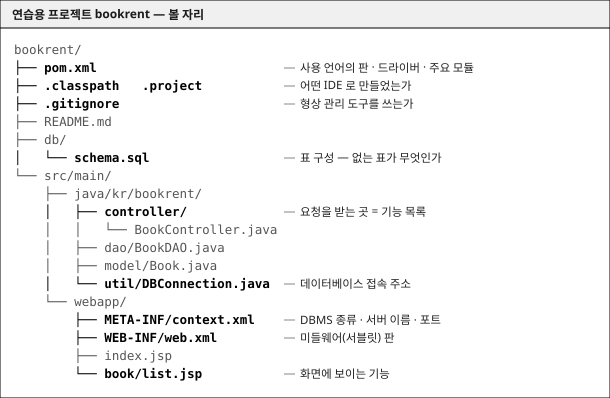
bookrent 폴더를 받아
바탕화면에 풀어 둡니다. 평가에서 받는 원본이 아니라 연습용이며,
구성은 실제와 비슷하게 맞추었습니다.
폴더를 받지 못했으면 이 절 위쪽의 「연습용 프로젝트 파일 하나씩 열어 보기」
상자에서 파일을 열 수 있습니다.목적 — 조사 결과를 추측이 아니라 파일에서 찾아 냅니다. 「어느 파일 몇째 줄」까지 댈 수 있어야 근거가 됩니다.
준비물 — 연습용 프로젝트 bookrent 폴더, VS Code
준비 — 화면이 어떻게 생겼는지 먼저 봅니다
VS Code 를 처음 켜면 어디를 눌러야 할지 막막합니다. 우리가 쓸 곳은 딱 네 군데뿐입니다.
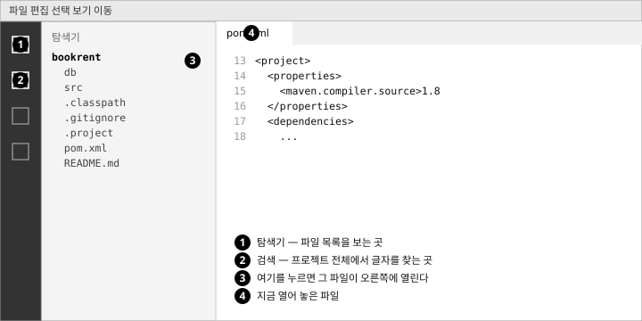
왼쪽 끝의 세로 막대에 아이콘이 줄지어 있습니다. 맨 위가 탐색기(파일 목록), 그 아래가 검색입니다. 이 둘만 번갈아 누르면 됩니다.
절차 1 — 폴더를 통째로 엽니다
파일을 하나씩 열지 않습니다. 폴더째로 열어야 검색이 됩니다.
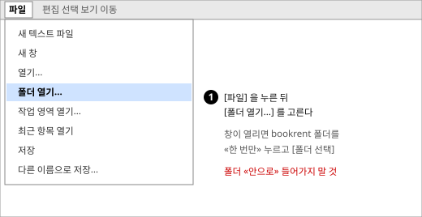
- 왼쪽 위 [파일] 을 누릅니다.
- 펼쳐진 목록에서 [폴더 열기...] 를 누릅니다. 바로 위의 [열기...] 가 아닙니다.
- 창이 열리면
bookrent폴더를 한 번만 눌러 파랗게 만든 뒤 [폴더 선택] 을 누릅니다. 두 번 눌러 폴더 안으로 들어가면 안 됩니다. - 「이 폴더의 작성자를 신뢰합니까」라고 물으면 [예, 신뢰합니다] 를 누릅니다.
BOOKRENT 라는 글씨와 함께
db · src · pom.xml 같은 이름이 보이면 된 것입니다
안 보인다면왼쪽 세로 막대의 맨 위 아이콘(탐색기)을 눌러 보십시오.
숨겨져 있을 뿐입니다
절차 2 — 적을 곳을 먼저 만듭니다
찾기 전에 적을 표를 먼저 만들어 둡니다. 찾고 나서 만들면 빠뜨립니다. 엑셀이나 한글에 아래 네 칸짜리 표를 만들고 일곱 줄을 비워 둡니다. 맨 윗줄은 예시로 채워 두었습니다.
| 조사 항목 | 조사 결과 | 근거 파일 | 줄 |
|---|---|---|---|
| 사용 언어 | Java 8 | pom.xml | 16 |
| 데이터베이스 | |||
| 미들웨어 | |||
| IDE | |||
| 형상 관리 도구 | |||
| 네트워크 환경 |
아래 절차를 하나 끝낼 때마다 그 줄을 바로 채웁니다. 마지막에 몰아서 적으면 어느 파일에서 봤는지 잊어버립니다.
절차 3 — 전체 검색을 익힙니다
이 실습에서 가장 많이 쓸 기능입니다. 먼저 연습부터 합니다.
Ctrl과Shift를 누른 채F를 누릅니다. (세 개를 동시에 누릅니다.)- 왼쪽에 입력칸이 나타나면
jdbc라고 칩니다. 영문 소문자로 칩니다. - 잠시 기다리면 아래에 결과가 나옵니다.
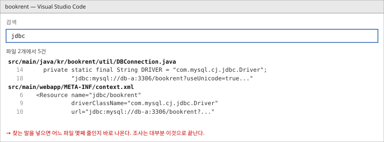
결과를 읽는 법입니다. 굵은 글씨가 파일 이름, 그 아래 들여쓴 줄들이 찾은 자리입니다. 왼쪽의 작은 숫자가 줄 번호이고, 이 숫자를 표의 「줄」 칸에 적습니다. 줄을 누르면 오른쪽에 그 파일이 열리면서 해당 줄로 바로 갑니다.
절차 4 — 사용 언어를 찾습니다
- 왼쪽 세로 막대의 맨 위 아이콘(탐색기)을 눌러 파일 목록으로 돌아갑니다.
- 목록에서
pom.xml을 한 번 누릅니다. 오른쪽에 내용이 열립니다. Ctrl+F를 누르고compiler라고 칩니다.
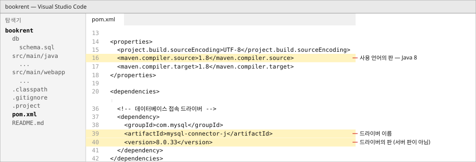
pom.xml —
16째 줄이 사용 언어의 판, 39·40째 줄이 드라이버입니다16째 줄에 <maven.compiler.source>1.8</...> 이 있습니다.
1.8 이 곧 Java 8 입니다. (자바는 1.8 부터 8, 9, 11 로 번호를 바꿨습니다.)
파일 목록에 .java 와 .jsp 가 함께 있는 것도 보아 둡니다.
그래서 표에는 이렇게 적습니다.
Java 8 (서블릿 · JSP 기반) 근거 pom.xml 16줄
절차 5 — 데이터베이스를 찾습니다 (두 군데를 봅니다)
방금 연 pom.xml 의 39 · 40째 줄을 보십시오.
mysql-connector-j 라는 접속 드라이버가 적혀 있습니다.
여기까지로는 「MySQL 을 쓴다」는 것만 압니다.
접속 주소는 다른 파일에 있습니다.
탐색기에서 src → main → webapp →
META-INF 를 차례로 눌러 펼치고 context.xml 을 엽니다.
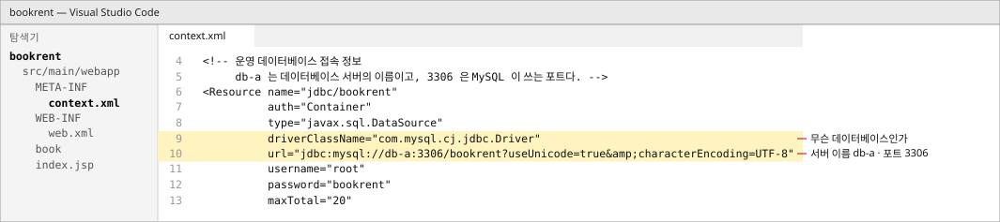
context.xml —
한 줄에서 종류 · 서버 이름 · 포트가 한꺼번에 나옵니다10째 줄을 끊어 읽습니다.
| 토막 | 뜻 |
|---|---|
jdbc: | 자바가 데이터베이스에 붙는 방식 |
mysql | 종류 — MySQL 입니다 |
//db-a | 데이터베이스 서버의 이름 |
:3306 | 포트 — MySQL 이 주로 쓰는 번호 |
/bookrent | 그 서버 안의 데이터베이스 이름 |
8.0.33)은 데이터베이스 서버의 판이 아닙니다.
파일만 보아서는 서버가 5.7 인지 8.0 인지 알 수 없습니다.
서버에 물어야 나옵니다 (1절 1.4.4).
표에는 서버가 답한 값 MySQL 5.7 을 적고,
근거 칸에는 context.xml 10줄 + 서버 확인 처럼 둘 다 적습니다.절차 6 — 미들웨어를 찾습니다
탐색기에서 webapp 아래의 WEB-INF 를 펼치고
web.xml 을 엽니다.
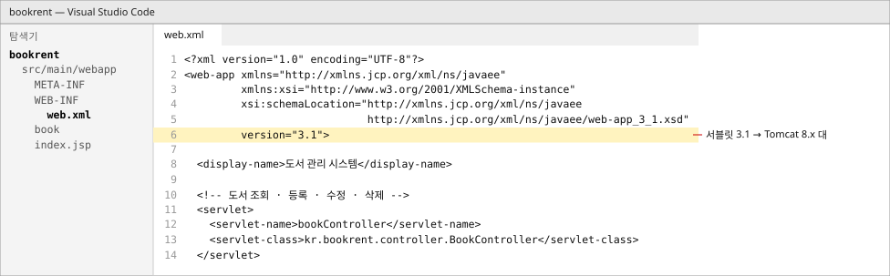
web.xml —
6째 줄 version="3.1" 이 서블릿 3.1 규격입니다서블릿은 규격이고 Tomcat 은 그 규격을 지키는 제품입니다.
서블릿 3.1 을 쓰는 것이 Tomcat 8.x 대입니다.
여기서도 정확한 판은 서버에서 version.sh 로 확인해 함께 적습니다.
절차 7 — IDE 와 형상 관리 도구를 찾습니다
이 둘은 파일을 열 필요도 없습니다. 파일이 있다는 사실 자체가 답입니다. [그림 2-5] 의 왼쪽 파일 목록을 다시 보십시오.
| 목록에 있는 파일 | 무엇의 표시인가 | 표에 적을 것 |
|---|---|---|
.project · .classpath | 이클립스 | IDE — 이클립스 |
.gitignore | Git | 형상 관리 — Git (판은 서버에서 확인) |
.idea 폴더를,
VS Code 는 .vscode 폴더를 만듭니다.
Subversion 을 쓰면 .svn 폴더가 생깁니다.
점으로 시작하는 이름은 대개 도구가 만들어 둔 것입니다.절차 8 — 망 구성을 찾습니다 (찾을 수 없습니다)
남은 칸은 네트워크 환경 하나입니다. 검색으로 확인합니다.
Ctrl+Shift+F로 검색을 엽니다.방화벽을 넣어 봅니다. 아무것도 나오지 않습니다.network·IDS도 넣어 봅니다. 역시 없습니다.- 시험 삼아
login도 넣어 보십시오.
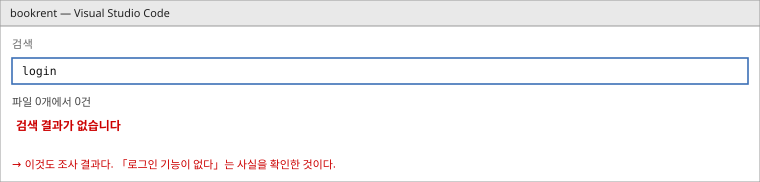
망 구성은 소스에 적히지 않습니다. 그러니 못 찾는 것이 정상입니다.
이때는 강사(실무에서는 발주처)에게 물어 답을 받고, 받은 대로 적습니다.
근거 칸에는 강사 확인 이라고 적습니다.
절차 9 — 1절의 값과 맞춰 봅니다
표가 다 찼으면 1절에서 서버를 조사한 값과 나란히 놓습니다. 둘을 합쳐야 일곱 줄이 채워진다는 것을 확인하는 단계입니다.
| 항목 | 1절 · 서버에서 | 2절 · 파일에서 | 조사표에 적을 것 |
|---|---|---|---|
| 사용 언어 | java -version → 1.8.0_402 |
pom.xml 16줄 → 1.8 | Java 8, 서블릿 · JSP 기반 |
| 데이터베이스 | mysqladmin → 5.7.44 |
context.xml 10줄 → mysql |
MySQL 5.7 — 서버가 답한 값 |
| 미들웨어 | version.sh → Tomcat 8.5.100 |
web.xml 6줄 → 서블릿 3.1 | Apache Tomcat 8.5 |
| IDE | 서버에 없음 | .project 있음 |
이클립스 — 파일에서만 나온다 |
| 형상 관리 | git --version → 2.34.1 |
.gitignore 있음 | Git 2.34.1 |
| 네트워크 | ss -ltn → 22 · 8080 |
없음 (그림 2-8) | 내부망 — 물어서 받은 값 |
제출물 — 절차 2 에서 만든 근거 표 1부 (일곱 줄, 근거 파일과 줄 번호 포함)
스스로 확인 — ① 일곱 줄마다 파일 이름과 줄 번호를 댈 수 있습니까 ② 데이터베이스 줄에 드라이버의 판(8.0.33)을 적지 않았습니까 ③ 파일에 없던 줄은 누구에게 물어 받은 값인지 적어 두었습니까
3기능 조사와 문제점
기능 조사
소스를 열어 지금 무엇이 되는지 적습니다. 화면과 메뉴를 훑고, 컨트롤러나 서블릿의 이름을 보면 기능 목록이 나옵니다.

문제점을 적는 법
문제점은 없는 기능으로 적습니다. 「불편하다」 「느리다」 같은 느낌이 아니라 무엇이 없는지를 적어야 그것이 그대로 요구사항이 됩니다.
약함 보안이 취약함
권함 인증 기능 부재 — 누구나 도서를 등록 · 삭제할 수 있음
아래처럼 적으면 「유저 인증 기능 추가」 라는 요구사항이 그대로 따라 나옵니다. 문제점 하나에 요구사항 하나가 대응하게 만드는 것이 이 단계의 목표입니다.
- 문제점 칸의 줄 수와 요구사항 칸의 줄 수가 같습니까.
- 요구사항 가운데 현행 조사에 나오지 않은 것을 전제로 하는 것이 있습니까.
- 주요 모듈 칸에 적은 라이브러리가 실제 프로젝트에 들어 있습니까.
기능 목록은 어디서 나오는가
기능을 상상해서 적지 않습니다. 화면과 파일에 있는 것이 곧 기능입니다. 단추 하나가 기능 하나이고, 그 단추를 받는 곳의 갈래 하나가 기능 하나입니다.
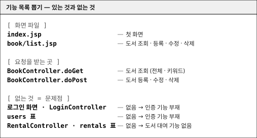
목적 — 화면을 하나씩 보며 기능을 세고, 검색으로 없는 것을 찾습니다.
준비물 — 실습 2-2 에서 연 bookrent 폴더
절차 1 — 화면 파일을 셉니다
탐색기에서 src → main → webapp 을 펼칩니다.
.jsp 로 끝나는 파일을 찾습니다.
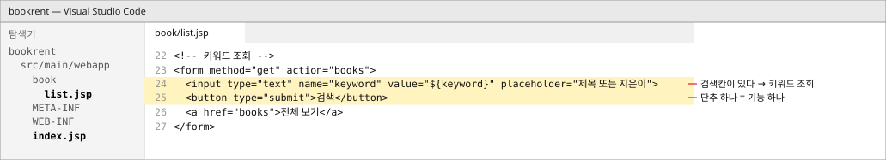
.jsp 파일이 둘뿐입니다| 본 것 | 적을 것 |
|---|---|
index.jsp | 첫 화면 (기능 아님) |
book/list.jsp 24째 줄 검색칸 | 조회 — 전체, 키워드 |
절차 2 — 단추를 셉니다
book/list.jsp 를 열고 button 을 찾습니다
(Ctrl+F).
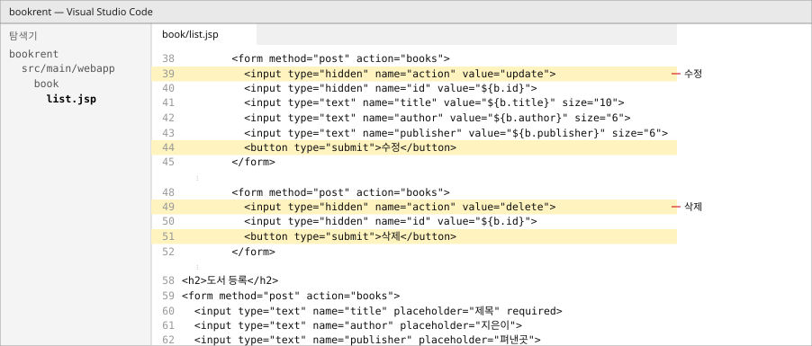
name="action" 의 value 를 보면 무엇을 하는 단추인지 나옵니다.
여기까지 조회 · 등록 · 수정 · 삭제 넷이 모였습니다.
절차 3 — 받는 곳의 갈래를 셉니다
화면에서 센 것이 맞는지 BookController.java 에서 확인합니다.
if 갈래의 수가 곧 기능의 수입니다.
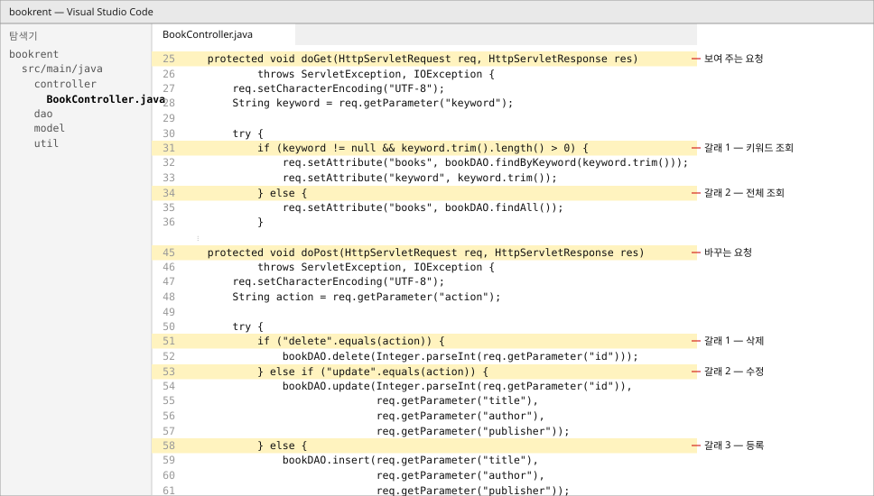
doGet 에 두 갈래, doPost 에 세 갈래화면에서 센 것과 같습니다. 그래서 「현재 사용 중인 기능」은 한 줄로 이렇게 적습니다.
도서 등록 / 수정 / 삭제 / 조회 (전체, 키워드)
절차 4 — 기술 스택과 주요 모듈을 옮깁니다
새로 조사하지 않습니다. 실습 2-2 의 결과에서 옮겨 적습니다.
| 칸 | 어디서 가져오나 | 적을 것 |
|---|---|---|
| 주요 기술 스택 | 실습 2-2 의 조사표 | Java 서블릿, JSP, JDBC, Apache Tomcat |
| 주요 모듈 | pom.xml 39째 줄 |
mysql-connector-j.jar |
절차 5 — 없는 것을 찾습니다 (이 단계의 핵심)
Ctrl+Shift+F 로 세 번 검색합니다.
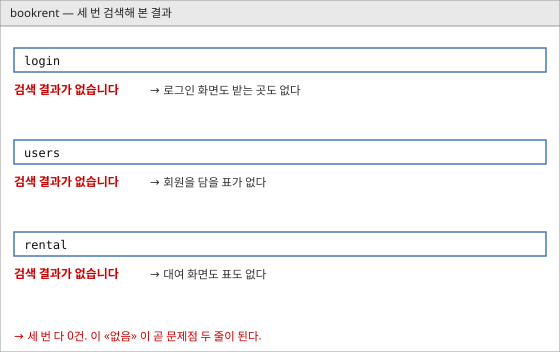
db/schema.sql 도 열어 보십시오. 표가 books 하나뿐입니다.
무엇을 보관하는지가 곧 무엇을 할 수 있는지입니다.
책만 담고 있으니 책 관리만 됩니다.
절차 6 — 「없는 것」을 문제점 문장으로 바꿉니다
느낌이 아니라 무엇이 없는지로 적어야 그대로 요구사항이 됩니다.
| 검색 결과 | 약한 문장 | 적을 문장 |
|---|---|---|
login 0건users 0건 |
보안이 취약함 | 인증 기능 부재 — 누구나 도서를 등록 · 수정 · 삭제할 수 있음 |
rental 0건 |
기능이 부족함 | 도서 대여 기능 없음 — 책 목록만 관리할 뿐 빌려 줄 수 없음 |
절차 7 — 문제점마다 요구사항을 하나씩 답니다
줄 수가 같아야 합니다. 문제점 둘이면 요구사항도 둘입니다.
| 문제점 (지금 없는 것) | 요구사항 (그래서 더할 것) |
|---|---|
| 인증 기능 부재 | 유저 인증 기능 추가 (회원가입, 로그인, 로그아웃) |
| 도서 대여 기능 없음 | 도서 대여 기능 추가 (대여 요청, 대여 승인, 반납 요청, 반납 처리) |
완성한 모습
여섯 칸이 이렇게 차면 끝입니다.
| 현행 시스템 기능 조사 | |
|---|---|
| 현재 사용 중인 기능 | 도서 등록 / 수정 / 삭제 / 조회 (전체, 키워드) |
| 주요 기술 스택 | Java 서블릿, JSP, JDBC, Apache Tomcat |
| 주요 모듈 | mysql-connector-j.jar |
| 기존 시스템의 문제점 | 인증 기능 부재, 도서 대여 기능 없음 |
제출물 — 위 네 칸의 기능 조사표 + 요구사항 두 줄
스스로 확인 — ① 문제점과 요구사항의 줄 수가 같습니까 ② 기능의 각 줄이 어느 파일에서 나왔는지 말할 수 있습니까 ③ 검색해 보지 않고 짐작으로 적은 문제점이 있습니까
4목표 시스템 기술
목표 시스템 표
현행을 조사했으면 앞으로 어떻게 할 것인지를 적습니다. 수행준거 1.3 이 「명확하고 구체적으로 기술할 수 있다」 로 되어 있습니다. 구체적이라는 말은 제품 이름과 판이 적혀 있다는 뜻입니다.

바꾸지 않기로 하는 것도 결정입니다
모든 칸을 「전환」 으로 채울 필요가 없습니다. 데이터베이스를 그대로 쓰기로 했다면 「MySQL 을 그대로 사용」 이라고 적고 그 이유를 「데이터 이관 비용이 크고 현행 구조로 요구사항을 모두 담을 수 있음」 처럼 적습니다.
바꾸는 쪽을 택했다면 왜 지금인지를 적습니다. 「최신이라서」 는 이유가 되지 않습니다. 「인증과 권한 관리를 직접 만들지 않고 쓰기 위해」 처럼 이번 요구사항과 이어야 설득이 됩니다.
순서가 중요합니다 — 요구사항을 먼저 받습니다
목표 시스템은 현행 시스템만 보고 정할 수 없습니다. 「MySQL 5.7 은 오래됐으니 8.0 으로 올린다」는 이유가 되지 않습니다. 무엇을 더 해 달라고 했는지를 받아 본 다음에야 지금 것으로 되는지 안 되는지 따질 수 있습니다.
현행 조사 (st2) → 문제점과 요구사항 (st3) → 목표 시스템 (지금)
그래서 이 단계에서 할 일은 하나입니다. 요구사항을 하나씩 들고 가서 현행 시스템에 대 보는 것입니다. 대 보아 들어가면 그대로 두고, 들어가지 않으면 그때 바꿉니다.
목적 — 「바꾼다 / 그대로 둔다」를 요구사항에 근거해 결정하고, 그 이유를 한 줄로 적습니다.
준비물 — 실습 2-2 의 운행환경 조사표, 실습 2-3 의 요구사항 표
절차 1. 요구사항을 왼쪽에 적는다
실습 2-3 에서 나온 요구사항을 그대로 옮깁니다. 여기서 새로 만들지 않습니다.
절차 2. 하나씩 「현행으로 되는가」를 판정한다
된다 · 안 된다 둘 중 하나로 답하고, 안 된다면 무엇 때문인지를 적습니다.
이 칸이 비면 바꿀 이유가 없어집니다.
절차 3. 안 되는 것이 있을 때만 바꾼다
모든 칸을 「전환」으로 채울 필요가 없습니다.
그대로 두는 것도 결정이며, 결정에는 이유가 따라야 합니다.
경우 ㄱ — 평가에서 실제로 받는 요구사항
인증 추가와 대여 추가 둘입니다. 하나씩 대 봅니다.
| 요구사항 | 현행으로? | 따져 본 내용 |
|---|---|---|
| 유저 인증 추가 회원가입 · 로그인 · 로그아웃 |
된다 | 회원 표 하나를 더하고 세션을 쓰면 됩니다.
서블릿에 세션 기능이 이미 있고, web.xml 에
session-timeout 까지 잡혀 있습니다 |
| 도서 대여 추가 요청 · 승인 · 반납 |
된다 | 대여 표를 더하고 화면 몇 개를 만들면 됩니다. 기본 SQL 로 충분하고 새 기술이 필요 없습니다 |
둘 다 「된다」이므로 바꿀 것이 없습니다. 결론은 이렇게 적습니다.
| 항목 | 결정 | 이유 |
|---|---|---|
| 데이터베이스 | MySQL 5.7 유지 | 추가 요구사항이 모두 기본 SQL 로 구현 가능하고, 이관 비용이 큼 |
| 프레임워크 | 서블릿 · JSP 유지 | 기능 두 가지를 더하는 범위라 구조를 바꿀 필요가 없음 |
| 보안 | 인증 · 권한 추가 | 인증이 없어 누구나 도서를 삭제할 수 있음 (문제점 1) |
| 데이터 구조 | 회원 · 대여 표 추가 | 회원과 대여를 보관할 표가 없음 (문제점 1 · 2) |
경우 ㄴ — 요구사항이 이렇게 들어왔다면 (가상)
같은 현행 시스템인데 요구사항만 다음과 같이 바뀌었다고 해 봅시다. 현행 시스템은 한 글자도 달라지지 않았는데 결정이 뒤집힙니다.
| 요구사항 | 현행으로? | 따져 본 내용 |
|---|---|---|
| 월별 대여 순위를 집계해 보여 준다 |
안 된다 | 순위를 매기려면 RANK() 같은 윈도 함수가 필요한데
MySQL 5.7 에는 없습니다 (8.0 에서 들어왔습니다) |
| 반납 예정일에 문자로 알린다 |
안 된다 | 바깥 문자 발송 서비스를 불러야 하는데 내부망이라 외부로 나갈 수 없습니다 |
이때는 바꿔야 할 이유가 생깁니다. 같은 표가 이렇게 달라집니다.
| 항목 | 결정 | 이유 |
|---|---|---|
| 데이터베이스 | MySQL 8.0 으로 전환 | 월별 순위 집계에 윈도 함수가 필요한데 5.7 에 없음 |
| 네트워크 | 외부 연동 구간 개방 요청 | 문자 발송 서비스 호출이 내부망에서 막힘 |
| 프레임워크 | 서블릿 · JSP 유지 | 두 요구사항 모두 화면 구조와 무관함 |
절차 4. 확인해 보고 넘어간다
「안 된다」고 적으려면 정말 안 되는지 확인해 보아야 합니다.
1절에서 접속한 서버에서 직접 쳐 볼 수 있습니다.
mysql -h db-a -uroot -p -e "SELECT RANK() OVER (ORDER BY id) FROM books;"
ERROR 1064 라는 문법 오류가 납니다.
문법을 틀려서가 아니라 이 판이 그 문법을 모르기 때문입니다.
반면 SELECT JSON_OBJECT('a',1); 은 됩니다 —
JSON 은 5.7 에 이미 들어와 있습니다.
「옛날 판이니 다 안 될 것」이라고 넘겨짚지 말고 이렇게 하나씩 확인합니다.
절차 5. 기대 효과를 적는다
기대 효과는 문제점이 사라진 모습입니다.
문제점 1 이 「누구나 삭제할 수 있음」이었다면
기대 효과는 「권한 있는 사람만 도서를 관리하게 되어 자료가 지켜짐」입니다.
판이 다르면 여기서 갈립니다
같은 SQL 을 두 판에 던져 보면 목표 시스템을 정할 근거가 바로 나옵니다.
mysql> SELECT VERSION();
5.7.44
mysql> SELECT RANK() OVER (ORDER BY id) FROM books;
ERROR 1064 (42000): You have an error in your SQL syntax; check the manual
that corresponds to your MySQL server version for the right syntax to use
near '(ORDER BY id) FROM books' at line 1
같은 문장을 8.0 에 던지면 이렇게 됩니다.
+------+-----+
| id | rnk |
+------+-----+
| 1 | 1 |
| 2 | 2 |
+------+-----+
ERROR 1064」 가 곧 근거입니다.제출물 — 개발 방향성과 목표 시스템 표 1부 (목표 아키텍처 · 프레임워크 · 데이터베이스 · 보안 요구사항 · 전환 이유 · 기대 효과). 평가에서는 경우 ㄱ 로 적습니다. 경우 ㄴ 은 연습입니다.
스스로 확인 — ① 이유 칸마다 어느 요구사항 때문인지 드러납니까 ② 그대로 두기로 한 칸에도 이유가 적혀 있습니까 ③ 기대 효과가 문제점과 짝을 이룹니까 ④ 제품 이름과 판이 적혀 있습니까 (수행준거 1.3 의 「구체적으로」)
5요구사항 명세서
덩어리를 쪼갭니다
「도서 대여 기능 추가」 는 한 줄이지만 그대로 만들 수는 없습니다. 요구사항 명세서는 그 덩어리를 하나씩 확인할 수 있는 크기로 쪼갠 표입니다.
| ID | 구분 | 요구사항 | 검증 기준 |
|---|---|---|---|
| SR-01 | 기능 | 회원은 아이디와 비밀번호로 가입할 수 있다 | 같은 아이디로 두 번 가입하면 거절된다 |
| SR-02 | 기능 | 회원은 로그인 · 로그아웃할 수 있다 | 로그아웃 후 대여 화면에 들어가면 로그인으로 보내진다 |
| SR-03 | 기능 | 회원은 대여 가능한 도서의 대여를 신청할 수 있다 | 이미 대여 중인 도서는 신청되지 않는다 |
| SR-04 | 기능 | 관리자는 대여 신청을 승인하거나 반려할 수 있다 | 승인하면 도서 상태가 「대여 중」 으로 바뀐다 |
| SR-05 | 기능 | 회원은 반납을 요청하고 관리자는 반납을 처리할 수 있다 | 반납 처리하면 도서 상태가 「대여 가능」 으로 돌아간다 |
| SR-06 | 비기능 | 비밀번호는 저장할 때 되돌릴 수 없게 만든다 | 데이터베이스에서 원문 비밀번호가 보이지 않는다 |
검증 기준을 함께 적는 이유
수행준거 2.2 가 「정의된 검증 기준과 절차에 따라서 요구사항을 확인할 수 있다」 입니다. 요구사항만 적고 검증 기준을 비우면 「확인했다」 고 말할 근거가 없어집니다. 무엇을 해 보면 되는지를 한 줄로 적습니다.
약함 대여 기능이 잘 동작한다
권함 이미 대여 중인 도서로 신청하면 「이미 대여 중인 도서입니다」 가 뜬다
이 표의 ID(SR-01 …)는 뒤의 유스케이스와 API 에서 그대로 인용합니다. 번호를 붙여 두면 어느 요구사항이 어디서 처리되는지 짚어 보일 수 있습니다.
목적 — 실습 2-3 에서 받은 요구사항은 두 줄입니다. 이대로는 만들 수도 없고 확인할 수도 없습니다. 하나씩 해 볼 수 있는 크기로 쪼개고, 각각 어떻게 확인할지 적습니다.
준비물 — 실습 2-3 의 요구사항 표, 엑셀 또는 한글
절차 1 — 표를 만듭니다
네 칸짜리 표를 만듭니다. 칸 이름을 그대로 쓰십시오.
ID | 구분 | 요구사항 | 검증 기준
절차 2 — 괄호 안을 그대로 옮깁니다
쪼개는 일이 어려워 보이지만, 사실 이미 쪼개져 있습니다. 실습 2-3 의 요구사항을 다시 보십시오.
| 받은 요구사항 | 괄호 안 = 쪼갤 단위 |
|---|---|
| 유저 인증 기능 추가 (회원가입, 로그인, 로그아웃) | 회원가입 / 로그인 · 로그아웃 → 2줄 |
| 도서 대여 기능 추가 (대여 요청, 대여 승인, 반납 요청, 반납 처리) | 대여 요청 / 대여 승인 / 반납 → 3줄 |
로그인과 로그아웃은 짝이라 한 줄로 묶고, 반납 요청과 반납 처리도 한 묶음이라 한 줄로 묶습니다. 이렇게 기능 다섯 줄이 나옵니다.
절차 3 — 문장을 「누가 + 무엇을 + 할 수 있다」로 씁니다
요구사항은 완성된 문장으로 씁니다. 낱말만 적으면 감점입니다. 아래 빈칸을 채우듯이 쓰면 됩니다.
[ 누가 ] 은(는) [ 무엇을 ] 할 수 있다
| 이렇게 쓰면 안 됩니다 | 이렇게 씁니다 |
|---|---|
| 회원가입 | 회원은 아이디와 비밀번호로 가입할 수 있다 |
| 로그인 기능 | 회원은 로그인 · 로그아웃할 수 있다 |
| 대여 승인 처리 | 관리자는 대여 신청을 승인하거나 반려할 수 있다 |
절차 4 — 검증 기준을 「해 보면 어떻게 된다」로 씁니다
수행준거 2.2 가 「정의된 검증 기준과 절차에 따라서 요구사항을 확인할 수 있다」 입니다. 요구사항만 적고 이 칸을 비우면 「확인했다」고 말할 근거가 없습니다.
쓰는 요령은 하나입니다. 「무엇을 해 보면, 무엇이 보인다」를 한 줄로 적습니다. 채점자가 그대로 해 볼 수 있어야 합니다.
| 이렇게 쓰면 안 됩니다 | 이렇게 씁니다 |
|---|---|
| 대여 기능이 잘 동작한다 | 이미 대여 중인 도서로 신청하면 「이미 대여 중인 도서입니다」가 뜬다 |
| 회원가입이 정상 처리된다 | 같은 아이디로 두 번 가입하면 거절된다 |
| 보안을 적용한다 | 데이터베이스에서 원문 비밀번호가 보이지 않는다 |
절차 5 — 비기능 요구사항을 한 줄 더합니다
지금까지 적은 다섯 줄은 모두 기능입니다. 기능은 「할 수 있다」이고, 비기능은 「어떠해야 한다」입니다. 인증을 더하는 이상 비밀번호를 다루게 되므로 한 줄이 필요합니다.
| 구분 | 무엇을 적는가 | 예 |
|---|---|---|
| 기능 | 시스템이 하는 일 | 회원은 로그인할 수 있다 |
| 비기능 | 하는 일이 갖춰야 할 성질 보안 · 성능 · 사용성 |
비밀번호는 되돌릴 수 없게 저장한다 |
절차 6 — ID 를 붙입니다
위에서부터 SR-01 · SR-02 … 순서로 붙입니다.
SR 은 System Requirement 의 줄임말입니다.
이 번호는 장식이 아닙니다. 다음 단계에서 유스케이스마다 「이건 SR-03 때문에 있는 것」이라고 근거를 다는 데 씁니다. 번호가 없으면 근거를 달 수 없습니다.
완성하면 여섯 줄(기능 5 + 비기능 1)이 됩니다. 위의 표와 맞춰 보십시오.
제출물 — 요구사항 명세서 1부 (ID · 구분 · 요구사항 · 검증 기준, 여섯 줄)
스스로 확인 — ① 모든 줄에 「누가」가 적혀 있습니까 ② 검증 기준에 「잘」 · 「정상」 같은 말이 없습니까 ③ 받은 요구사항 두 줄의 괄호 안이 하나도 빠지지 않았습니까 (회원가입 · 로그인 · 로그아웃 · 대여 요청 · 대여 승인 · 반납 요청 · 반납 처리) ④ 비기능이 한 줄 이상 있습니까
6액터와 유스케이스 도출
액터 고르기
채점 항목 ② 06 이 「기존 시스템의 액터가 올바르게 정의되었는가」 입니다. 지금 시스템에 인증이 없으므로 기존 액터는 사실상 하나뿐입니다. 인증을 더하면서 액터가 늘어납니다.
| 액터 | 구분 | 할 수 있는 일 |
|---|---|---|
| 사용자 | 기존 | 도서 조회 · 등록 · 수정 · 삭제 — 구분이 없어 누구나 모두 할 수 있었다 |
| 비회원 | 추가 | 도서 조회 · 회원가입 |
| 회원 | 추가 | 도서 조회 · 로그인 · 대여 요청 · 반납 요청 |
| 관리자 | 추가 | 도서 등록 · 수정 · 삭제 · 대여 승인 · 반납 처리 |
인증이 없던 시절에는 구분 없는 사용자 하나가 모든 일을 했습니다. 그 사실을 적어 두면 「왜 인증을 더하는가」 가 저절로 설명됩니다.
유스케이스 목록
채점 항목 ② 07 이 「기존 시스템의 유스케이스 목록이 빠짐없이 도출되었는가」 입니다. 빠짐없이 가 걸려 있으므로 기능 조사표의 기능이 모두 목록에 있어야 합니다.
| ID | 유스케이스 | 구분 | 대응 요구사항 |
|---|---|---|---|
| UC-01 | 도서 조회 | 기존 | — |
| UC-02 | 도서 등록 · 수정 · 삭제 | 기존 | — |
| UC-03 | 회원가입 | 추가 | SR-01 |
| UC-04 | 로그인 · 로그아웃 | 추가 | SR-02 |
| UC-05 | 대여 요청 | 추가 | SR-03 |
| UC-06 | 대여 승인 | 추가 | SR-04 |
| UC-07 | 반납 요청 · 반납 처리 | 추가 | SR-05 |
감점 조사표에 없는 「도서 예약」 이 유스케이스로 등장
권함 조사표와 요구사항 명세서에 있는 것만 옮겨 적습니다
목적 — 누가 쓰는가(액터)와 무엇을 하는가(유스케이스)를 목록으로 만듭니다. 다음 단계에서 그릴 그림의 재료입니다. 여기서 빠진 것은 그림에도 없습니다.
준비물 — 실습 2-3 의 기능 조사표, 실습 2-5 의 요구사항 명세서
절차 1 — 「누가」를 모읍니다
새로 생각해 내지 않습니다. 실습 2-5 에서 이미 다 적었습니다. 요구사항 명세서의 첫 낱말만 훑어 모으면 됩니다.
| 요구사항의 첫 낱말 | 모으면 |
|---|---|
| SR-01 회원은 … 가입할 수 있다 | 회원 · 관리자 가입하기 «전» 사람은 아직 회원이 아니므로 비회원도 필요합니다 |
| SR-02 회원은 … 로그인할 수 있다 | |
| SR-04 관리자는 … 승인할 수 있다 |
절차 2 — 「기존」 액터를 먼저 적습니다
채점 항목 ② 06 이 「기존 시스템의 액터가 올바르게 정의되었는가」 입니다. 추가될 액터만 적으면 이 항목이 빈칸이 됩니다.
기존 시스템에는 인증이 없었습니다. 그러니 액터가 나뉘어 있지 않았고, 구분 없는 사용자 하나가 모든 일을 했습니다. 그것을 그대로 한 줄 적습니다.
사용자 | 기존 | 도서 조회 · 등록 · 수정 · 삭제 (구분 없이 누구나)
절차 3 — 유스케이스 목록을 두 덩어리로 만듭니다
유스케이스는 지어내는 것이 아니라 옮겨 적는 것입니다. 출처가 둘뿐입니다.
| 구분 | 어디서 가져오는가 | 나오는 것 |
|---|---|---|
| 기존 | 실습 2-3 의 기능 조사표 「현재 사용 중인 기능」 칸 |
도서 조회 / 도서 등록 · 수정 · 삭제 |
| 추가 | 실습 2-5 의 요구사항 명세서 기능 요구사항 다섯 줄 |
회원가입 / 로그인 · 로그아웃 / 대여 요청 / 대여 승인 / 반납 요청 · 반납 처리 |
절차 4 — 이름을 「동사」로 바꿉니다
유스케이스 이름은 사용자가 하는 일이어야 합니다. 화면 이름이나 표 이름을 그대로 쓰면 안 됩니다.
| 이렇게 쓰면 안 됩니다 | 이렇게 씁니다 |
|---|---|
| 도서 목록 화면 | 도서 조회 |
| 회원 테이블 관리 | 회원가입 |
| 대여 처리 모듈 | 대여 요청 |
절차 5 — ID 와 근거를 답니다
UC-01 부터 번호를 붙이고,
추가인 줄에는 어느 SR 때문인지를 적습니다.
기존인 줄은 요구사항에서 온 것이 아니므로 — 로 둡니다.
ID | 유스케이스 | 구분 | 대응 요구사항
절차 6 — 「빠짐없이」를 확인합니다
채점 항목 ② 07 이 「기존 시스템의 유스케이스 목록이 빠짐없이 도출되었는가」 입니다. 빠짐을 막는 방법은 거꾸로 훑기입니다.
- 기능 조사표의 「현재 사용 중인 기능」을 하나씩 짚으며 유스케이스 목록에 있는지 확인합니다.
- 요구사항 명세서의 기능 다섯 줄을 하나씩 짚으며 유스케이스 목록에 있는지 확인합니다.
- 거꾸로, 유스케이스 목록을 하나씩 짚으며 출처가 어디인지 말해 봅니다. 말 못 하면 지어낸 것입니다.
세 번 다 통과하면 일곱 줄(기존 2 + 추가 5)이 남습니다. 위의 표와 맞춰 보십시오.
제출물 — 액터 정의표 1부 (기존 액터 포함) + 유스케이스 목록 1부 (ID · 구분 · 대응 요구사항)
스스로 확인 — ① 액터 표에 「기존」 줄이 있습니까 ② 추가 유스케이스마다 대응 SR 번호가 적혀 있습니까 ③ 유스케이스 이름이 모두 사용자가 하는 일로 되어 있습니까 ④ 조사표에도 요구사항에도 없는 것이 목록에 섞여 있지 않습니까
7유스케이스 다이어그램
작도 결과

«include» 로 이었습니다.표준 표기법에서 지킬 것
채점 항목 ② 08 이 「표준 표기법에 맞게 작성되었는가」 하나만 봅니다. 아래 넷이 지켜지면 충족됩니다.
- 유스케이스는 타원입니다. 네모로 그리면 그 자리에서 걸립니다.
- 액터는 시스템 경계 밖에 둡니다. 안에 넣으면 안 됩니다.
- 액터와 유스케이스를 잇는 선에는 화살표를 붙이지 않습니다. 그냥 실선입니다.
«include»와«extend»는 점선 화살표이고 방향이 반대입니다. include 는 부르는 쪽에서 불리는 쪽으로, extend 는 더하는 쪽에서 원래 쪽으로 향합니다.
기존과 추가를 구분해 두기
표기법에는 없는 것이지만, 실선과 점선으로 나누고 범례를 달아 두면 채점자가 ② 07(목록이 빠짐없이 도출되었는가)을 바로 확인할 수 있습니다. 그림 아래에 한 줄만 적으면 됩니다.
— 실선 타원 : 현행 시스템에 이미 있는 기능 - - 점선 타원 : 이번 요구사항으로 더하는 기능
목적 — 실습 2-6 의 목록을 그림 한 장으로 옮깁니다. 채점 항목 ② 08 은 표기법 하나만 봅니다.
app.diagrams.net 으로 들어갑니다
만들 것유스케이스 다이어그램 1장 (PNG)
걸리는 시간40분
절차 0 — draw.io 를 엽니다
- 브라우저 주소칸에
app.diagrams.net을 칩니다. - 「다이어그램을 어디에 저장하시겠습니까」라고 물으면 [Device](내 컴퓨터)를 고릅니다. 로그인하지 않아도 됩니다.
- [Create New Diagram] → [Blank Diagram] → [Create].
- 왼쪽 아래 [More Shapes] 를 누르고 UML 에 체크한 뒤 [Apply]. 왼쪽 도형 칸에 액터와 유스케이스가 나타납니다.
절차 1 — 시스템 경계를 그립니다
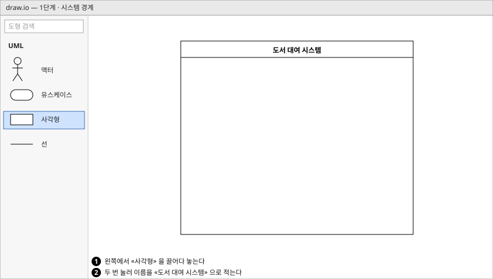
이 사각형이 「우리가 만들 것」과 「만들지 않을 것」의 경계입니다. 안쪽은 시스템이 하는 일, 바깥은 사람입니다.
절차 2 — 액터를 경계 «바깥» 에 놓습니다
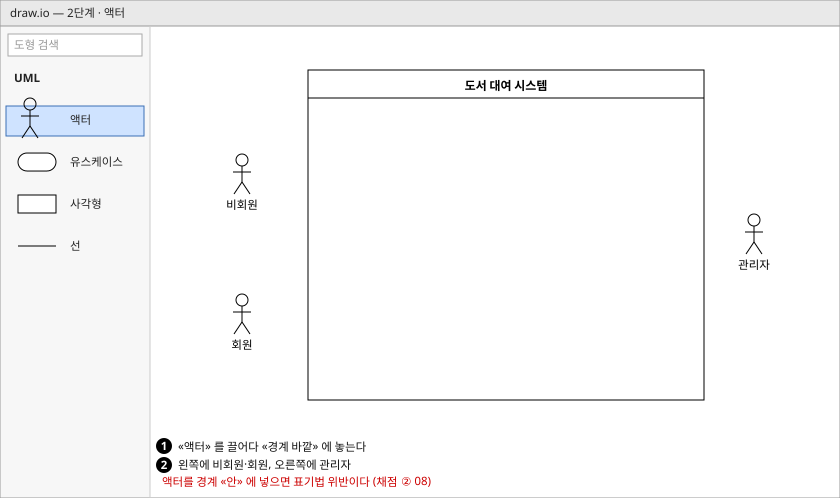
실습 2-6 의 액터 표를 그대로 옮깁니다. 왼쪽에 비회원 · 회원, 오른쪽에 관리자를 둡니다. 좌우로 나누면 선이 덜 엉킵니다.
절차 3 — 기존 기능을 실선 타원으로 놓습니다
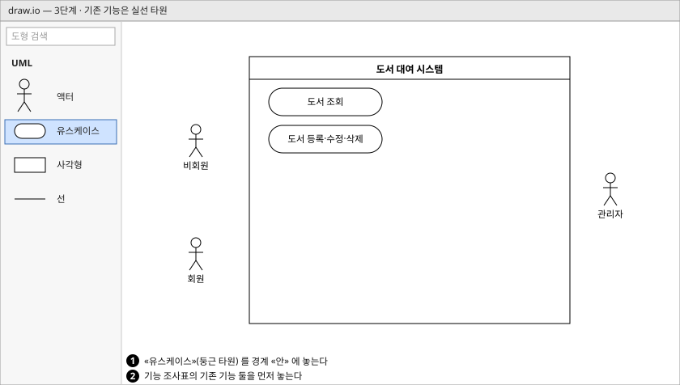
유스케이스는 반드시 타원입니다. 네모로 그리면 표기법 위반입니다.
절차 4 — 추가 기능은 점선으로 바꿉니다
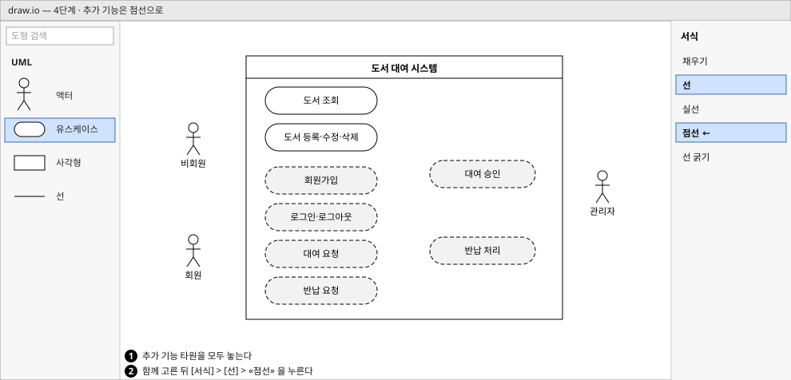
- 추가 유스케이스 다섯 개를 모두 놓습니다 (UC-03 ~ UC-07).
Shift를 누른 채 다섯 개를 함께 고릅니다.- 오른쪽 [서식] 칸에서 [선] → [점선] 을 누릅니다.
절차 5 — 액터와 유스케이스를 선으로 잇습니다
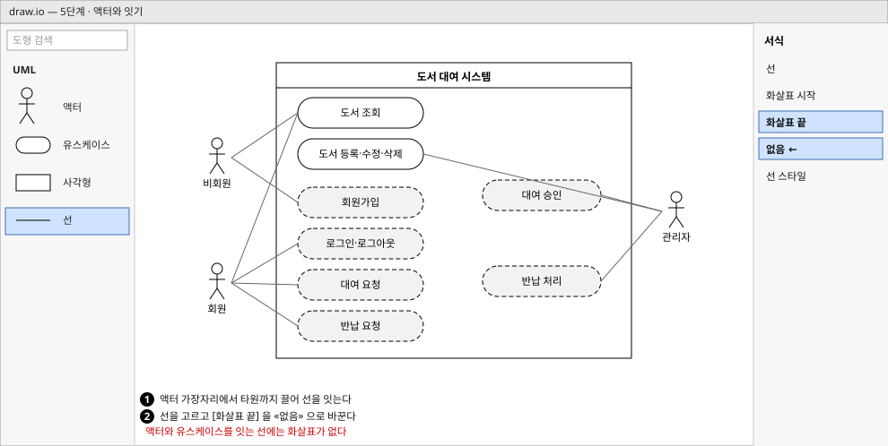
- 액터에 마우스를 올리면 가장자리에 파란 화살표가 나타납니다. 거기서 타원까지 끌면 선이 그어집니다.
- 그어진 선은 끝에 화살촉이 달려 나옵니다. 이대로 두면 안 됩니다.
- 선을 고르고 [서식] → [화살표 끝] → [없음] 으로 바꿉니다.
어느 액터가 어느 유스케이스에 붙는지는 실습 2-6 의 액터 표 그대로입니다. 지어내지 말고 표를 보며 잇습니다.
잠깐 — 선은 네 가지뿐입니다
남은 절차에서 모양이 다른 선이 나옵니다. 유스케이스 다이어그램에 쓰는 선은 이 넷이 전부입니다. 모양과 방향을 함께 보아 두십시오.
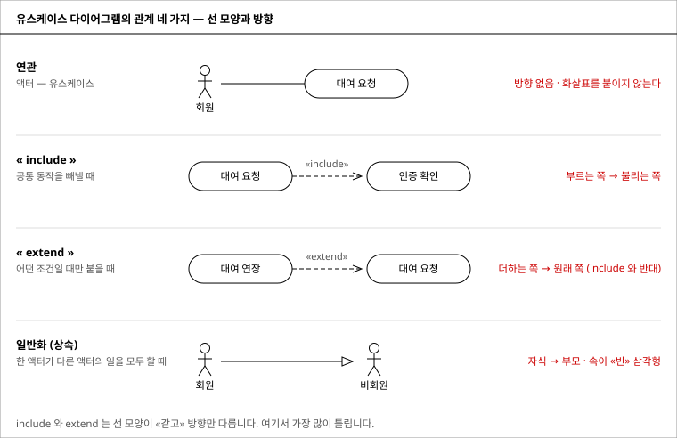
| 관계 | 선 모양 | 방향 | 언제 쓰는가 |
|---|---|---|---|
| 연관 | 실선 · 화살표 없음 | 없음 | 액터가 그 기능을 쓴다 |
| «include» | 점선 · 열린 화살표 | 부르는 쪽 → 불리는 쪽 | 여러 곳이 반드시 함께 하는 공통 동작 |
| «extend» | 점선 · 열린 화살표 include 와 같은 모양 |
더하는 쪽 → 원래 쪽 include 와 반대 |
어떤 조건일 때만 붙는 기능 |
| 일반화 (상속) | 실선 · 속이 빈 삼각형 | 자식 → 부모 | 한 액터가 다른 액터의 일을 모두 하면서 더 한다 |
회원 ──▷ 비회원 으로 묶으면 선이 하나 줄어듭니다.
다만 위 완성 그림처럼 각각 선을 그어도 틀린 것이 아닙니다.
채점 항목 ② 08 은 쓴 표기가 올바른지를 보지
일반화를 썼는지를 보지 않습니다.
자신 없으면 쓰지 마십시오. 잘못 쓰면 감점이지만 안 써서 감점되지는 않습니다.절차 6 — 공통 동작을 «include» 로 묶습니다
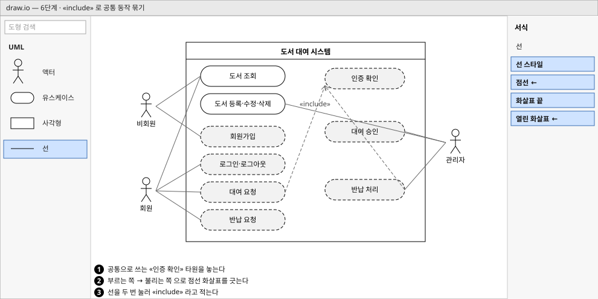
- 인증 확인 타원을 하나 더 놓습니다 (점선).
- 대여 요청 → 인증 확인 으로 선을 긋습니다. 부르는 쪽에서 불리는 쪽으로 향합니다.
- 선을 고르고 [선 스타일] → 점선, [화살표 끝] → 열린 화살표 로 바꿉니다.
- 선을 두 번 눌러
«include»라고 적습니다. («» 는ㄴ을 누르고한자키를 누르면 나옵니다.)
절차 7 — 범례를 답니다
그림 아래에 두 줄만 적으면 됩니다. 이 두 줄이 절차 4 의 약속을 설명합니다.
── 실선 타원 : 현행 시스템에 이미 있는 기능
- - 점선 타원 : 이번 요구사항으로 더하는 기능
절차 8 — 그림 파일로 내보냅니다
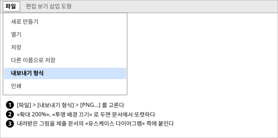
내려받은 그림을 제출 문서의 「유스케이스 다이어그램」 쪽에 붙입니다
(실습 2-1 에서 만든 6쪽).
.drawio 원본 파일도 함께 저장해 두면 나중에 고칠 수 있습니다.
내기 전 네 가지 확인
채점 항목 ② 08 이 보는 것은 이 넷입니다. 그림을 보며 하나씩 짚으십시오.
| 확인할 것 | 틀리면 이렇게 보입니다 | |
|---|---|---|
| 1 | 유스케이스가 모두 타원인가 | 네모로 그린 것이 섞여 있다 |
| 2 | 액터가 모두 경계 바깥인가 | 액터가 사각형 안에 들어가 있다 |
| 3 | 액터 선에 화살표가 없는가 | 선 끝에 화살촉이 달려 있다 |
| 4 | «include» 가 점선 화살표이고 방향이 맞는가 | 실선이거나 화살표가 거꾸로다 |
제출물 — 유스케이스 다이어그램 1장 (PNG) + 범례 두 줄
스스로 확인 — ① 실습 2-6 의 유스케이스가 하나도 빠짐없이 그림에 있습니까 ② 그림에 있는데 목록에 없는 것이 있습니까 («include» 로 빼낸 것이라면 목록에 한 줄 더해 둡니다) ③ 위 네 가지 확인을 모두 통과했습니까
8유스케이스 명세서
서식

사전조건과 사후조건
두 칸을 헷갈리는 경우가 많습니다. 기준은 시점입니다.
- 사전조건 — 시작하기 전에 참이어야 하는 것
- 「회원이 로그인한 상태이고, 도서 상태가 대여 가능이다」 처럼 상태로 적습니다. 「회원이 로그인한다」 는 동작이므로 사전조건이 아닙니다.
- 사후조건 — 끝난 뒤에 달라져 있는 것
- 「대여 신청이 승인 대기로 저장되고 관리자 목록에 나타난다」 처럼 무엇이 바뀌었는지를 적습니다. 화면에 무엇이 보이는지가 아니라 데이터가 어떻게 되었는지를 적는 것이 낫습니다.
기본 흐름의 번호
기본 흐름은 번호를 붙인 문장으로 적습니다. 이 번호가 다음 단계에서 시퀀스 다이어그램의 메시지 번호가 됩니다. 번호가 없으면 시퀀스를 그릴 때 순서를 다시 정해야 하고, 그러면 둘이 어긋납니다.
목적 — 그림으로는 「무엇이 있다」까지만 보입니다. 어떤 순서로 돌아가는지를 글로 적습니다.
먼저 UC-05 대여 요청 한 장을 함께 써 보고, 나머지는 같은 방법으로 씁니다.
절차 1 — 위 세 칸은 옮겨 적습니다
ID · 이름 · 액터는 실습 2-6 의 유스케이스 목록에 이미 있습니다. 여기서 새로 정하지 않습니다.
| 칸 | 어디서 가져오나 | 적을 것 |
|---|---|---|
| 유스케이스 ID | 유스케이스 목록 | UC-05 |
| 유스케이스명 | 유스케이스 목록 | 대여 요청 |
| 액터 | 액터 표 | 회원 |
절차 2 — 개요는 한 문장입니다
「누가 무엇을 한다」로 끝냅니다. 길게 쓰지 않습니다.
회원이 조회한 도서의 대여를 신청한다.
절차 3 — 사전조건은 «상태» 로 적습니다
사전조건과 사후조건을 헷갈리는 경우가 가장 많습니다. 기준은 시점입니다. 사전조건은 시작하기 전에 이미 참인 것입니다.
| 이렇게 쓰면 안 됩니다 | 이렇게 씁니다 |
|---|---|
| 회원이 로그인한다 — 동작입니다 |
회원이 로그인한 상태이고, 대상 도서의 상태가 「대여 가능」이다 |
절차 4 — 사후조건은 «데이터가 어떻게 되었는가» 로 적습니다
끝난 뒤에 무엇이 달라져 있는지를 적습니다. 화면에 무엇이 보이는지보다 데이터가 어떻게 되었는지가 낫습니다. 화면은 바뀌어도 데이터는 남기 때문입니다.
| 약한 문장 | 적을 문장 |
|---|---|
| 대여 신청 완료 화면이 뜬다 | 대여 신청이 「승인 대기」 상태로 저장되고, 관리자 목록에 나타난다 |
절차 5 — 기본 흐름에 «번호» 를 붙입니다
이 단계가 이 실습의 핵심입니다. 기본 흐름은 번호를 붙인 문장으로 적고, 액터가 하는 일과 시스템이 하는 일을 번갈아 씁니다.
1. 회원이 도서 상세에서 「대여 신청」 을 누른다.
2. 시스템이 로그인 여부와 도서 상태를 확인한다.
3. 시스템이 대여 신청을 「승인 대기」 로 저장한다.
4. 시스템이 신청 번호와 안내 문구를 보여 준다.
번호를 왜 붙이는가 — 장식이 아닙니다. 다음 단계에서 이 순서가 그대로 시퀀스 다이어그램의 메시지 순서가 됩니다.
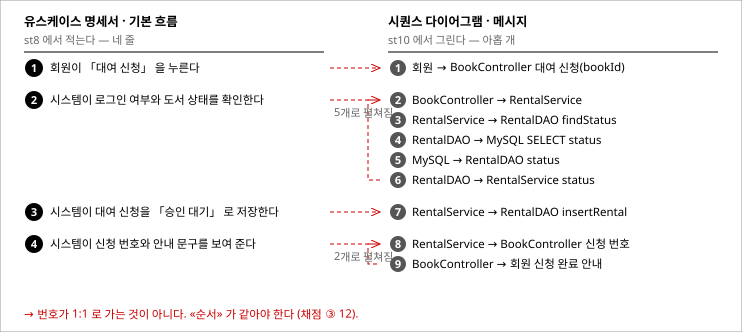
절차 6 — 대안 흐름과 예외 흐름을 나눕니다
둘 다 「몇 번에서 갈라지는가」를 번호로 나타냅니다.
2번에서 갈라지면 2a · 2b 로 적습니다.
| 구분 | 뜻 | 예 |
|---|---|---|
| 대안 흐름 | 갈라졌다가 돌아온다 | 2a. 로그인하지 않은 경우 — 로그인 화면으로 보내고,
로그인 후 2번으로 돌아온다 |
| 예외 흐름 | 갈라져서 끝난다 | 2b. 이미 대여 중인 경우 —
안내를 띄우고 흐름을 끝낸다 |
절차 7 — 나머지 네 장을 같은 방법으로 씁니다
UC-03 회원가입 · UC-04 로그인 · UC-06 대여 승인 · UC-07 반납. 액터가 바뀌는 것에 주의하십시오 — UC-06 은 관리자입니다.
rental 을 검색해 0건이었던 것을 떠올리십시오 —
없는 것은 흐름에도 없습니다.제출물 — 유스케이스 명세서 5장 (아홉 칸 모두 채움)
스스로 확인 — ① 사전조건이 「…이다」 로 끝납니까 (「…한다」면 흐름으로 옮기십시오) ② 기본 흐름에 번호가 붙어 있습니까 ③ 대안 · 예외 흐름에 갈라지는 번호(2a · 2b)가 붙어 있습니까 ④ 흐름에 적은 동작이 조사표에 있는 기능입니까
9시퀀스의 표기 요소
먼저 — 아직 프로그램을 배우지 않았어도 됩니다
시퀀스 다이어그램에는 BookController · RentalService 같은
낯선 이름이 나옵니다. 이 단계에서 코딩을 알 필요는 없습니다.
이름은 지어내는 것이 아니라 연습용 프로젝트의 폴더 이름에서 그대로 가져오는 것이고
(실습 2-2 에서 이미 열어 보았습니다),
하는 일만 알면 그림을 그릴 수 있습니다.
왜 다섯 개로 나뉘는지가 가장 막히는 곳입니다. 「회원 → MySQL」 한 줄이면 되지 않나 싶은데, 그렇지 않습니다. 식당에 견주면 한눈에 들어옵니다.
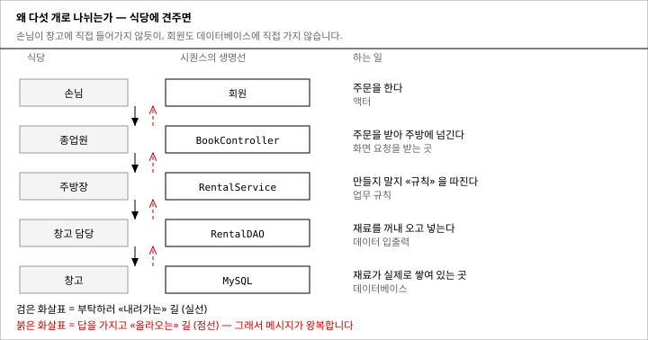
손님은 창고에 직접 들어가지 않습니다. 종업원에게 말하고, 종업원이 주방에 넘기고, 주방장이 「지금 그 재료가 있나」를 따지고, 창고 담당이 꺼내 옵니다. 시스템도 똑같이 나누어 둡니다. 그래야 규칙이 바뀌어도 주방장만 고치면 되고, 창고를 옮겨도 창고 담당만 고치면 됩니다.
여섯 가지 표기

객체를 고르는 법
채점 항목 ③ 11 이 「참여하는 객체가 올바르게 정의되었는가」 입니다. 무엇을 생명선으로 놓을지는 계층을 따라 정하면 됩니다.
| 자리 | 이 예제에서 | 고르는 기준 |
|---|---|---|
| 액터 | 회원 | 사람 또는 바깥 시스템 |
| 화면 · 컨트롤러 | BookController | 요청을 받는 자리 |
| 업무 처리 | RentalService | 판단과 규칙이 들어 있는 자리 |
| 데이터 접근 | RentalDAO | 질의를 만드는 자리 |
| 저장소 | MySQL | 데이터베이스 |
다섯 개가 보통입니다. 세 개 아래로 줄이면 흐름이 뭉뚱그려지고, 여덟 개를 넘으면 한 쪽에 들어가지 않습니다.
약함 「회원 → 시스템 → DB」 세 개만 놓음
권함 컨트롤러 · 서비스 · DAO 를 나누어 놓습니다. 계층이 드러납니다
목적 — 메시지를 긋기 전에 누가 등장하는지부터 정합니다. 여기서 순서를 잘못 잡으면 뒤에서 선이 엉킵니다.
절차 1 — 등장인물을 명세서에서 찾습니다
새로 정하지 않습니다. 실습 2-8 의 기본 흐름에 나오는 것이 전부입니다.
| 기본 흐름의 문장 | 등장하는 것 |
|---|---|
| 1. 회원이 「대여 신청」 을 누른다 | 회원 (액터) |
| 2. 시스템이 로그인 여부와 도서 상태를 확인한다 | 「시스템」을 잘게 나눕니다 — 화면을 받는 곳, 업무 규칙, 데이터베이스 입출력 |
연습용 프로젝트의 폴더 이름이 그대로 답입니다 —
controller · service · dao.
여기에 액터와 데이터베이스를 더하면 다섯입니다.
회원 → BookController → RentalService → RentalDAO → MySQL
절차 2 — 왼쪽부터 순서대로 놓습니다
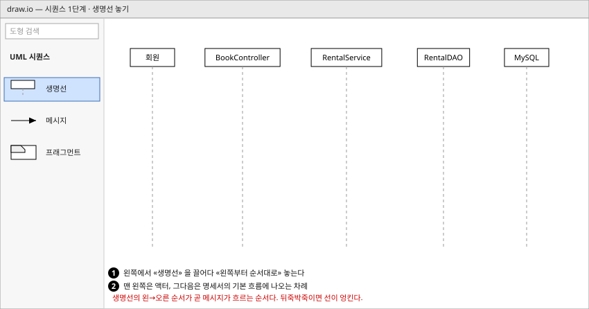
- 도형 검색칸에
UML을 쳐서 시퀀스 도형을 찾습니다. - 생명선을 끌어다 놓고 이름을 적습니다.
- 다섯 개를 같은 높이로 나란히 둡니다.
제출물 — 생명선 다섯 개가 놓인 draw.io 파일 (아직 메시지는 없습니다)
스스로 확인 — ① 생명선의 이름이 실제 파일 이름과 같습니까 (BookController 등) ② 왼쪽부터 부르는 차례로 놓였습니까 ③ 기본 흐름에 나오지 않는 것이 섞여 있지 않습니까
10메시지 흐름 작도
작도 결과

작도 절차
목적 — 기본 흐름을 메시지로 펼칩니다. 화살촉 모양이 뜻을 가릅니다 — 여기가 채점 항목 ③ 13 입니다.
준비물 — 실습 2-9 의 생명선 다섯, 실습 2-8 의 UC-05 명세서
절차 1 — 화살표 두 가지를 구분합니다
| 무엇을 할 때 | 선과 화살촉 | 예 |
|---|---|---|
| 부를 때 동기 메시지 |
실선 + «채운» 삼각형 | 1. 대여 신청(bookId) |
| 답할 때 응답 메시지 |
점선 + 열린 화살표 | 6. status |
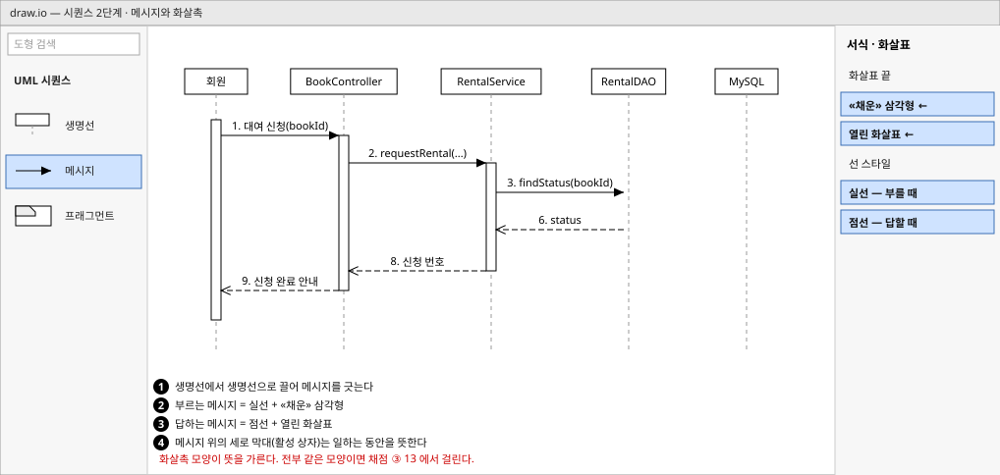
draw.io 에서 선을 그으면 기본이 열린 화살표입니다. 부르는 메시지는 선을 고르고 [서식] → [화살표 끝] → [채운 삼각형] 으로 바꿉니다.
절차 2 — 기본 흐름을 펼쳐 긋습니다
명세서의 네 줄을 위에서부터 순서대로 옮깁니다. 한 줄이 여러 메시지로 늘어나도 됩니다(그림 2-22). 다만 순서는 바뀌면 안 됩니다.
| 명세서 기본 흐름 | 메시지로 펼치면 |
|---|---|
| 1. 회원이 「대여 신청」 을 누른다 | 1. 회원 → BookController |
| 2. 시스템이 로그인 여부와 도서 상태를 확인한다 |
2. BookController → RentalService 3. RentalService → RentalDAO 4. RentalDAO → MySQL 5 · 6. 답이 되돌아온다 (점선) |
| 3. 시스템이 「승인 대기」 로 저장한다 | 7. RentalService → RentalDAO |
| 4. 시스템이 신청 번호와 안내를 보여 준다 | 8 · 9. 답이 되돌아온다 (점선) |
절차 3 — 활성 상자를 확인합니다
생명선 위의 가느다란 세로 막대가 활성 상자입니다. 그 대상이 일하고 있는 동안을 뜻합니다. 부름을 받으면 시작되고, 답을 돌려주면 끝납니다.
draw.io 에서는 메시지를 생명선에 붙이면 대개 저절로 생깁니다. 안 생기면 생명선 위에 가는 사각형을 하나 놓으면 됩니다.
절차 4 — 메시지에 번호를 붙입니다
글 앞에 1. 2. 처럼 번호를 답니다.
채점자가 명세서와 그림을 나란히 놓고 순서를 맞춰 보기 때문입니다.
제출물 — UC-05 대여 요청의 시퀀스 다이어그램 1장
스스로 확인 — ① 부르는 메시지가 실선 + 채운 삼각형입니까 ② 답하는 메시지가 점선 + 열린 화살표입니까 ③ 메시지 순서가 명세서의 기본 흐름 순서와 같습니까 ④ 생명선에 없는 대상이 메시지에 등장하지 않습니까
11동기 · 비동기와 프래그먼트
동기와 비동기
채점 항목 ③ 13 이 「동기 / 비동기 메시지가 적절히 구분되어 표현되었는가」 입니다. 구분 기준은 하나입니다. 보낸 쪽이 답을 기다리는가.
| 종류 | 화살촉 | 언제 쓰는가 | 이 예제에서 |
|---|---|---|---|
| 동기 | 꽉 찬 삼각형 | 답을 받아야 다음으로 갈 수 있을 때 | 도서 상태 조회 · 대여 저장 |
| 비동기 | 열린 갈매기 | 보내 놓고 바로 다음으로 갈 때 | 관리자 알림 발송 |
| 응답 | 점선 + 열린 갈매기 | 동기 호출의 답 | 조회 결과 · 신청 번호 |
대부분의 메시지는 동기입니다. 비동기는 알림 · 메일 · 로그 처럼 결과를 기다릴 필요가 없는 것에만 씁니다. 비동기가 하나도 없으면 ③ 13 에서 구분했다고 보기 어려우므로, 알림 같은 것을 한 건 넣어 두는 편이 낫습니다.
프래그먼트
채점 항목 ③ 14 는 「필요한 경우 사용되었는가」 입니다. 무조건 넣으라는 것이 아니라, 갈리거나 되풀이되는 곳이 있으면 표시하라는 뜻입니다.
| 종류 | 뜻 | 이 예제에서 쓸 자리 |
|---|---|---|
| alt | 조건에 따라 갈림 | 도서가 대여 가능일 때 / 대여 중일 때 |
| opt | 조건이 맞으면 실행, 아니면 건너뜀 | 연체료가 있을 때만 계산 |
| loop | 되풀이 | 목록의 도서마다 상태를 확인 |
유스케이스 명세서의 대안 흐름과 예외 흐름이 그대로 alt 의 갈래가 됩니다.
명세서를 제대로 썼다면 어디에 무엇을 넣을지 고민할 필요가 없습니다.
감점 예외 흐름이 명세서에 있는데 시퀀스에는 갈래가 없음
권함 명세서의 대안 · 예외를 alt 의 두 번째 칸으로 옮깁니다
목적 — 명세서의 대안 · 예외 흐름을 그림에 담고, 답을 기다리지 않는 메시지를 구분해 표시합니다.
준비물 — 실습 2-10 의 시퀀스, 실습 2-8 의 대안 · 예외 흐름
절차 1 — 갈라지는 자리를 찾습니다
명세서의 2a · 2b 가 곧 갈래입니다.
2번 메시지 뒤에서 갈라진다는 뜻입니다.
| 명세서 | 그림에서 |
|---|---|
2a. 로그인하지 않은 경우 — 로그인 화면으로 |
alt 프래그먼트를 씌우고 칸마다 조건을 적는다 |
2b. 이미 대여 중인 경우 — 안내 후 끝 |
절차 2 — alt 프래그먼트를 씌웁니다
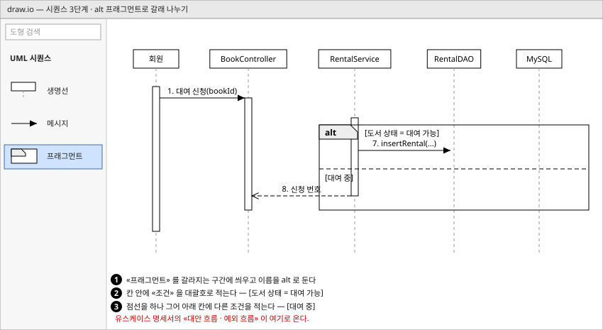
- 도형 칸에서 프래그먼트를 끌어다 갈라지는 구간에 씌웁니다.
- 왼쪽 위 작은 칸에
alt라고 적습니다. - 칸 안에 조건을 대괄호로 적습니다 —
[도서 상태 = 대여 가능]. - 점선을 하나 그어 아래 칸을 만들고
[대여 중]을 적습니다.
| 이름 | 언제 쓰는가 | 이 산출물에서 |
|---|---|---|
| alt | 조건에 따라 갈라질 때 | 대여 가능 ↔ 대여 중 |
| opt | 조건이 맞을 때만 한 번 | 안 써도 됩니다 |
| loop | 되풀이할 때 | 안 써도 됩니다 |
절차 3 — 비동기 메시지를 가려 냅니다
대부분의 메시지는 답을 기다립니다(동기). 그런데 어떤 일은 시켜 놓고 기다리지 않습니다(비동기).
| 구분 | 화살촉 | 가리는 법 |
|---|---|---|
| 동기 | 실선 + 채운 삼각형 | 답이 와야 다음 줄로 넘어갈 수 있다 |
| 비동기 | 실선 + 열린 화살표 (응답 점선과 혼동 주의) |
시켜 놓고 그냥 다음 줄로 간다 |
대여 요청에서는 관리자에게 알리는 일이 그렇습니다. 알림이 늦게 가더라도 회원에게는 이미 「신청 완료」를 보여 줄 수 있습니다. 그래서 화살촉을 열어 둡니다.
제출물 — alt 프래그먼트와 비동기 메시지가 표시된 시퀀스 다이어그램 1장
스스로 확인 — ① alt 의 조건이 명세서의 대안 · 예외 흐름과 같습니까 ② 조건을 대괄호로 적었습니까 ③ 비동기로 표시한 메시지가 정말 답을 기다리지 않아도 되는 것입니까 ④ 그림에 있는 동작이 모두 명세서에 있습니까
12엔드포인트 도출
어디서 나오는가
시퀀스에서 액터가 컨트롤러로 보내는 화살표가 API 한 건이 됩니다.
대여 요청 시퀀스의 1번 메시지가 POST /rentals 입니다.
유스케이스 하나에 API 한둘이 나옵니다.

URL 을 정하는 규칙
규칙을 하나 정해 두고 끝까지 지킵니다. 가장 무난한 것은 자원을 명사 복수로 쓰는 방식입니다.
| 하는 일 | 메서드 | URL | 비고 |
|---|---|---|---|
| 목록 조회 | GET | /books | 검색은 질의 문자열로 |
| 한 건 조회 | GET | /books/{id} | — |
| 만들기 | POST | /books | — |
| 일부 고치기 | PATCH | /rentals/{id}/approve |
상태를 바꾸는 동작 |
| 지우기 | DELETE | /books/{id} | — |
약함 /getBookList · /doRental — 동사를 URL 에 넣음
권함 GET /books · POST /rentals — 동작은 메서드가 나타냅니다
목적 — 시퀀스의 화살표에서 API 를 뽑습니다. 모든 화살표가 API 가 되는 것은 아닙니다.
준비물 — 실습 2-10 의 시퀀스, 실습 2-3 의 기능 조사표
절차 1 — 「바깥에서 들어오는 화살표」만 고릅니다
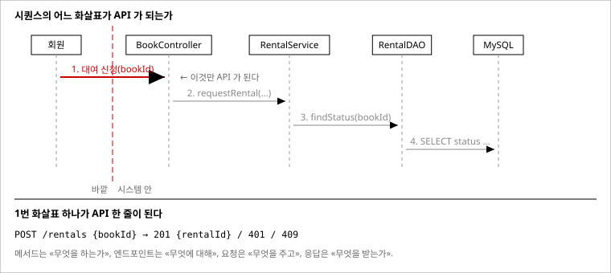
회원 → BookController 는 바깥에서 안으로 들어옵니다. API 입니다.
BookController → RentalService 는 안에서 안으로 부르는 것입니다. API 가 아닙니다.
findStatus 나 SELECT 는 API 가 아닙니다.
브라우저가 부를 수 있는 것만 API 입니다.절차 2 — 메서드를 고릅니다
「무엇을 하는가」로 정합니다. 넷만 알면 됩니다.
| 메서드 | 하는 일 | 이 시스템의 예 |
|---|---|---|
GET | 가져온다 (바꾸지 않음) | 도서 목록 · 도서 상세 |
POST | 새로 만든다 | 도서 등록 · 회원가입 · 대여 신청 |
PUT | 통째로 바꾼다 | 도서 수정 |
DELETE | 지운다 | 도서 삭제 |
PATCH /rentals/{id}/approve 가 자연스럽습니다.절차 3 — 엔드포인트를 짓습니다
규칙 셋만 지키면 됩니다.
| 이렇게 쓰면 안 됩니다 | 이렇게 씁니다 |
|---|---|
/getBookList동사를 넣었습니다 |
GET /books — 동사는 메서드가 맡습니다 |
/book홑수입니다 |
/books — 겹수로 씁니다 |
/books?id=3하나를 고르는데 물음표를 썼습니다 |
/books/{id} — 하나는 경로로,
거르기는 물음표로 (?keyword=) |
절차 4 — 기존과 추가를 나누어 표를 채웁니다
기존은 실습 2-3 의 「현재 사용 중인 기능」에서, 추가는 실습 2-5 의 요구사항에서 가져옵니다.
| 구분 | 가져올 곳 | 나오는 것 |
|---|---|---|
| 기존 | 기능 조사표 | 조회(전체 · 키워드) / 상세 / 등록 / 수정 / 삭제 — 다섯 줄 |
| 추가 | 요구사항 명세서 | 회원가입 / 로그인 / 로그아웃 / 대여 요청 / 대여 승인 / 반납 요청 / 반납 처리 — 일곱 줄 |
제출물 — API 목록표 (구분 · 메서드 · 엔드포인트, 열두 줄 안팎)
스스로 확인 —
① 내부 호출(findStatus 같은 것)이 섞여 있지 않습니까
② 엔드포인트에 동사가 들어가 있지 않습니까
③ 기능 조사표의 다섯 기능이 모두 표에 있습니까
④ 요구사항의 일곱 기능이 모두 표에 있습니까
13요청과 응답 기술
한 건을 풀어 쓰는 서식
목록 표만으로는 ③ 17 · 18 을 충족하기 어렵습니다. 추가 기능은 한 건씩 아래 서식으로 풀어 씁니다.
POST /rentals 대여 신청
헤더 Authorization: Bearer <token>
요청 { "bookId": 128 }
응답
201 { "rentalId": 4021, "status": "PENDING" }
401 { "message": "로그인이 필요합니다" }
409 { "message": "이미 대여 중인 도서입니다" }
상태 코드 고르기
채점 항목 ③ 18 이 「응답 형식 및 상태 코드가 구체적으로 명시되었는가」 입니다. 성공만 적으면 구체적이라고 보기 어렵습니다. 실패했을 때 무엇이 오는지까지 적습니다.
| 코드 | 뜻 | 이 예제에서 쓸 자리 |
|---|---|---|
| 200 | 잘 됐다 | 조회 · 승인 |
| 201 | 새로 만들었다 | 회원가입 · 대여 신청 · 도서 등록 |
| 204 | 됐는데 돌려줄 내용이 없다 | 로그아웃 |
| 400 | 보낸 값이 잘못됐다 | 필수 항목 누락 |
| 401 | 로그인하지 않았다 | 대여 신청 · 반납 요청 |
| 403 | 로그인했지만 권한이 없다 | 회원이 대여 승인을 시도 |
| 404 | 그런 것이 없다 | 없는 도서 번호 |
| 409 | 지금 상태와 부딪친다 | 중복 아이디 · 이미 대여 중 |
여덟 개를 다 쓸 필요는 없습니다. API 한 건에 성공 하나 + 실패 하나나 둘이면 됩니다. 요구사항 명세서의 검증 기준에 적어 둔 거절 상황이 곧 실패 코드가 됩니다.
감점 응답: 성공 시 200
권함 201 · 401 · 409 를 각각 어떤 경우인지와 함께 적습니다
목적 — 목록만으로는 만들 수 없습니다. 추가 기능을 한 건씩 헤더 · 요청 · 응답까지 풀어 씁니다.
준비물 — 실습 2-12 의 API 목록, 실습 2-5 의 검증 기준
절차 1 — 풀어 쓸 건을 고릅니다
목록 열두 줄을 모두 풀어 쓰지 않습니다. 추가 기능 가운데 값을 주고받는 것만 고르면 됩니다.
회원가입 · 로그인 · 대여 요청 — 세 건이면 충분합니다
절차 2 — 네 칸으로 적습니다
| 칸 | 무엇을 적나 | 예 |
|---|---|---|
| 헤더 | 본문과 별개로 딸려 가는 정보 주로 「나 누구다」 |
Authorization: Bearer <token> |
| 요청 | 보내는 값 | { "bookId": 128 } |
| 응답 | 성공했을 때 받는 값 | { "rentalId": 4021, "status": "PENDING" } |
| 상태 코드 | 성공 하나 + 실패 한둘 | 201 · 401 · 409 |
{ "bookId": 128 } 은
「bookId 라는 이름의 값이 128 이다」라는 뜻입니다.
이름은 큰따옴표로 감싸고, 이름과 값 사이에 쌍점을 찍습니다.
값이 글자면 값에도 따옴표를 붙이고("PENDING"),
숫자면 붙이지 않습니다(128).
여럿이면 쉼표로 잇습니다. 이 네 가지가 전부입니다.절차 3 — 상태 코드를 «검증 기준» 에서 끌어옵니다
외워서 고르지 않습니다. 실습 2-5 에 이미 적어 두었습니다.
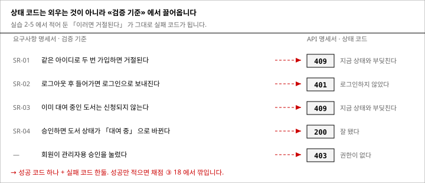
고르는 요령은 거절하는 이유를 보는 것입니다.
| 거절하는 이유 | 코드 | 이 시스템의 예 |
|---|---|---|
| 보낸 값이 잘못됐다 | 400 | 제목 없이 도서 등록 |
| 로그인을 안 했다 | 401 | 로그아웃 상태로 대여 신청 |
| 권한이 없다 | 403 | 회원이 대여 승인을 시도 |
| 그런 것이 없다 | 404 | 없는 도서 번호 |
| 지금 상태와 부딪친다 | 409 | 이미 대여 중 · 중복 아이디 |
절차 4 — 실패했을 때 무엇이 오는지도 적습니다
코드만 적고 끝내지 않습니다. 화면에 띄울 말까지 적어야 개발자가 그대로 만들 수 있습니다 (채점 ③ 20).
"401": { "message": "로그인이 필요합니다" }
"409": { "message": "이미 대여 중인 도서입니다" }
2b. 이미 대여 중인 경우 — 『이미 대여 중인 도서입니다』를 띄우고 끝낸다」
라고 적어 두었다면, 그 따옴표 안의 말을 그대로 옮기면 됩니다.절차 5 — 세 건을 마저 씁니다
회원가입과 로그인도 같은 네 칸으로 씁니다. 코드만 달라집니다.
| API | 성공 | 실패 |
|---|---|---|
POST /auth/signup | 201 |
409 중복 아이디 |
POST /auth/login | 200 + 토큰 |
401 아이디나 비밀번호가 틀림 |
POST /rentals | 201 + 신청 번호 |
401 비로그인 · 409 이미 대여 중 |
200 하나만 적는 것입니다.
채점 항목 ③ 18 이 「응답 형식 및 상태 코드가 구체적으로 명시되었는가」를 봅니다.
실패했을 때의 코드가 없으면 구체적이라고 보지 않습니다.제출물 — 풀어 쓴 API 명세 3건 (헤더 · 요청 · 응답 · 상태 코드)
스스로 확인 — ① 건마다 실패 코드가 하나 이상 있습니까 ② 실패 코드에 띄울 말이 함께 적혀 있습니까 ③ 그 말이 실습 2-8 의 예외 흐름과 같습니까 ④ 로그인이 필요한 API 에 헤더가 적혀 있습니까
14기존 API 와의 통합
한 형식으로 맞추기
채점 항목 ③ 19 가 「기존 시스템 API 와 일관된 형식으로 통합 작성되었는가」 입니다. 기존 기능을 표로, 추가 기능을 글로 적으면 둘을 견줄 수 없어 여기서 걸립니다.
현행 시스템이 서블릿 기반이라 엄밀한 의미의 API 가 없을 수도 있습니다. 그럴 때는 지금 요청을 받는 주소를 그대로 적고, 목표 시스템으로 바꾸었을 때의 주소를 나란히 둡니다.
| 구분 | 현행 | 목표 | 비고 |
|---|---|---|---|
| 기존 | /book/list.do | GET /books |
질의 문자열로 검색어를 받음 |
| 기존 | /book/insert.do | POST /books |
관리자만 |
| 추가 | — | POST /rentals |
회원만 · 401 · 409 처리 |
현행을 그대로 두기로 했다면 목표 칸에 현행과 같은 주소를 적고 비고에 「현행 유지」 라고 적습니다. 칸을 비우지 않습니다.
구체적이라는 것의 기준
채점 항목 ③ 20 이 「실제 구현 가능한 수준으로 구체적이고 정확하게」 입니다. 기준은 하나로 잡으면 됩니다.
목적 — 기존 기능과 추가 기능을 같은 서식으로 적습니다. 채점 항목 ③ 19 가 「기존 시스템 API 와 일관된 형식으로 통합되었는가」입니다.
준비물 — 실습 2-12 의 API 목록, 연습용 프로젝트
절차 1 — 현행이 실제로 어떻게 생겼는지 봅니다
연습용 프로젝트를 다시 열어 WEB-INF/web.xml 의
url-pattern 을 봅니다. 주소가 /books 하나뿐입니다.
그런데 BookController.doPost 에는 갈래가 셋이었습니다
(실습 2-3 절차 3). 한 주소에 세 기능이 몰려 있는 것입니다.
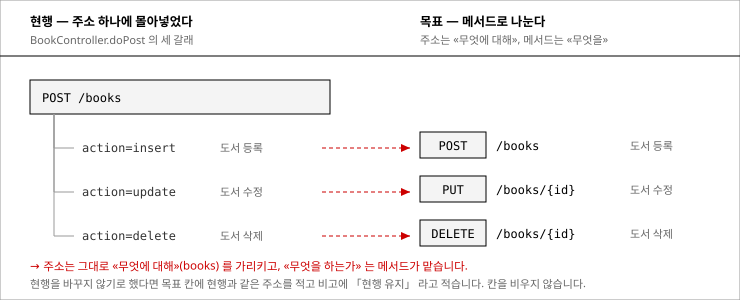
action 갈래가 목표에서는 메서드가 됩니다절차 2 — 세 칸짜리 표를 만듭니다
구분 | 현행 | 목표 | 비고
현행 칸에는 지금 요청을 받는 주소를 있는 그대로 적습니다. REST 답지 않아도 그대로 적습니다 — 그것이 사실이기 때문입니다.
절차 3 — 기존 다섯 줄을 채웁니다
| 구분 | 현행 | 목표 | 비고 |
|---|---|---|---|
| 기존 | GET /books |
GET /books | 현행 유지 |
| 기존 | GET /books?keyword= |
GET /books?keyword= | 현행 유지 |
| 기존 | POST /books (action=insert) |
POST /books | 관리자만 |
| 기존 | POST /books (action=update) |
PUT /books/{id} | 메서드로 구분 |
| 기존 | POST /books (action=delete) |
DELETE /books/{id} | 메서드로 구분 |
POST /books 로 같아서 한 줄로 보이기 때문입니다.
action 값이 다르면 다른 기능입니다.
실습 2-3 에서 「등록 / 수정 / 삭제 / 조회」라고 적어 놓고
여기서 두 줄을 흘리면 채점 ③ 16 에서 깎입니다.절차 4 — 추가 일곱 줄을 이어 붙입니다
같은 표에 이어 씁니다. 기존은 표로, 추가는 글로 적으면 둘을 견줄 수 없어 ③ 19 에서 걸립니다.
| 구분 | 현행 | 목표 | 비고 |
|---|---|---|---|
| 추가 | — | POST /auth/signup | 누구나 · 409 중복 |
| 추가 | — | POST /rentals | 회원만 · 401 · 409 |
| 추가 | — | PATCH /rentals/{id}/approve | 관리자만 · 403 |
현행에 없던 기능이므로 현행 칸은 — 로 둡니다. 비우지 않습니다.
절차 5 — 형식이 같은지 훑습니다
표를 세로로 훑으며 한 칸씩 봅니다. 섞여 있으면 고칩니다.
| 섞여 있으면 감점 | 이렇게 맞춥니다 |
|---|---|
/books 와 /rental겹수와 홑수가 섞였습니다 |
모두 겹수 — /books · /rentals |
/books/{id} 와 /rentals?id=하나를 고르는 방식이 다릅니다 |
모두 경로 — /rentals/{id} |
어떤 건 message, 어떤 건 error오류 칸 이름이 다릅니다 |
모두 message 로 통일 |
절차 6 — 「그대로 만들 수 있는가」로 마무리합니다
채점 항목 ③ 20 이 「실제 구현 가능한 수준으로 구체적이고 정확한가」입니다. 스스로 판단하기 어려우니 남에게 넘겨 봅니다.
제출물 — 기존 · 추가를 합친 API 통합표 1부 (열두 줄 안팎)
스스로 확인 —
① 기존이 다섯 줄입니까 (등록 · 수정 · 삭제 · 전체 조회 · 키워드 조회)
② 기존과 추가가 같은 표, 같은 칸에 적혀 있습니까
③ 이름 짓는 방식이 표 전체에서 일관됩니까
④ 빈칸 없이 — 나 「현행 유지」로 채워져 있습니까
15자가 점검
평가자 체크리스트는 부분 점수가 없습니다. 항목마다 근거가 되는 쪽 번호를 적어 보고, 적을 수 없는 항목을 찾습니다.
| 번호 | 확인할 것 | 근거 쪽 |
|---|---|---|
| 01 | 운영체제(OS)가 정확하게 조사되어 기재되었는가 | |
| 02 | DBMS 종류와 버전이 구체적으로 명시되었는가 | |
| 03 | 미들웨어(WAS) 종류와 버전이 정확하게 기재되었는가 | |
| 04 | 사용 언어 및 개발 프레임워크가 올바르게 조사되었는가 | |
| 05 | 형상관리 도구 및 네트워크 환경이 빠짐없이 조사되었는가 | |
| 06 | 기존 시스템의 액터가 올바르게 정의되었는가 | |
| 07 | 기존 시스템의 유스케이스 목록이 빠짐없이 도출되었는가 | |
| 08 | 유스케이스 다이어그램이 표준 표기법에 맞게 작성되었는가 | |
| 09 | 명세서에 사전조건 · 사후조건 · 기본흐름이 작성되었는가 | |
| 10 | 명세서 내용이 현행 시스템의 실제 기능과 일치하는가 | |
| 11 | 시퀀스에 참여하는 객체가 올바르게 정의되었는가 | |
| 12 | 메시지 흐름의 순서가 유스케이스 기본 흐름과 일치하는가 | |
| 13 | 동기 / 비동기 메시지가 적절히 구분되어 표현되었는가 | |
| 14 | alt · opt · loop 가 필요한 경우 사용되었는가 | |
| 15 | 시퀀스 다이어그램이 UML 표준 표기법에 맞는가 | |
| 16 | 추가 기능의 엔드포인트가 빠짐없이 정의되었는가 | |
| 17 | 각 API 의 요청 파라미터 및 바디가 명확한가 | |
| 18 | 각 API 의 응답 형식 및 상태 코드가 구체적인가 | |
| 19 | 기존 API 와 일관된 형식으로 통합 작성되었는가 | |
| 20 | 실제 구현 가능한 수준으로 구체적이고 정확한가 |
목적 — 내기 전에 채점자가 되어 한 번 훑습니다. 체크리스트는 부분 점수가 없으므로, 빈칸을 찾는 것이 전부입니다.
준비물 — 지금까지 만든 산출물 전부, 위의 스무 줄 표
절차 1 — 「근거 쪽」 칸을 채웁니다
항목마다 「몇 쪽을 보면 되는가」를 적습니다. 동그라미를 치지 말고 쪽 번호를 적으십시오. 동그라미는 스스로를 속이기 쉽지만, 쪽 번호는 없으면 못 적습니다.
| 번호 | 확인할 것 | 근거 쪽 |
|---|---|---|
| 01 | 운영체제가 정확하게 조사되어 기재되었는가 | 2쪽 |
| 02 | DBMS 종류와 버전이 구체적으로 명시되었는가 | 2쪽 |
| 08 | 유스케이스 다이어그램이 표준 표기법에 맞는가 | 6쪽 |
| … | … | … |
쪽 번호를 못 적는 항목이 나오면 거기가 0점입니다. 그 항목부터 채우십시오.
절차 2 — 혼자 보면 안 보이는 셋을 따로 봅니다
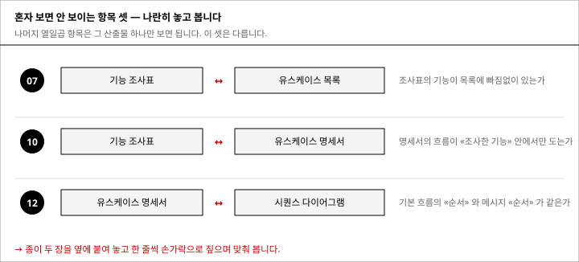
나머지 열일곱 항목은 그 산출물 하나만 보면 됩니다. 이 셋만은 종이 두 장을 옆에 붙여 놓고 한 줄씩 짚어 가며 맞춰 보십시오.
절차 3 — 자주 비는 자리부터 확인합니다
지금까지 실습에서 경고했던 자리입니다. 여기부터 짚으면 빠릅니다.
| 번호 | 자주 비는 까닭 | 돌아갈 곳 |
|---|---|---|
| 05 | 네트워크 환경을 빈칸으로 두었다 | 실습 2-2 절차 8 — 「없음」도 결과입니다 |
| 06 | 기존 액터 줄이 없다 | 실습 2-6 절차 2 |
| 14 | alt 를 쓰지 않았다 | 실습 2-11 — 대안 · 예외 흐름이 있으면 필요합니다 |
| 16 | 도서 수정 · 삭제 API 를 흘렸다 | 실습 2-14 절차 3 |
| 18 | 응답에 200 만 적었다 |
실습 2-13 절차 3 |
절차 4 — 점수를 세어 봅니다
쪽 번호를 적은 항목 수 × 5 가 예상 점수입니다. 스무 칸이면 100점입니다.
제출물 — 근거 쪽이 적힌 자가 점검표 1부
스스로 확인 — ① 스무 항목에 모두 쪽 번호가 적혀 있습니까 ② 07 · 10 · 12 를 두 장을 나란히 놓고 확인했습니까 ③ 쪽 번호를 적은 쪽을 실제로 펴 보았습니까 (적어 놓고 비어 있는 경우가 있습니다)
16통합과 제출
작업지시서의 제출 방법은 「각 항목을 PPT 로 정리하여 한 파일로 제출」 입니다.
목적 — 흩어진 산출물을 실습 2-1 에서 만든 뼈대에 끼워 넣고, 순서대로 제출합니다.
준비물 — 실습 2-1 의 뼈대 파일, 지금까지 만든 산출물 전부
절차 1 — 뼈대의 쪽 순서대로 끼워 넣습니다
| 쪽 | 넣을 것 | 어느 실습에서 나왔나 |
|---|---|---|
| 1 | 표지 | — |
| 2 | 운행환경 조사표 | 실습 1-2 · 2-2 |
| 3 | 현행 시스템 기능 조사 | 실습 2-3 |
| 4 | 요구사항과 목표 시스템 | 실습 2-3 · 2-4 |
| 5 | 요구사항 명세서 | 실습 2-5 |
| 6 | 유스케이스 다이어그램 | 실습 2-7 |
| 7 ~ 9 | 유스케이스 명세서 | 실습 2-8 |
| 10 ~ 12 | 시퀀스 다이어그램 | 실습 2-10 · 2-11 |
| 13 ~ 14 | API 명세서 | 실습 2-12 · 2-13 · 2-14 |
절차 2 — 그림이 읽히는지 봅니다
draw.io 에서 내보낸 그림을 붙였을 때 글자가 뭉개지지 않는지 확인합니다.
- 흐리면 draw.io 에서 확대 200% 로 다시 내보냅니다.
- 쪽을 넘어가면 그림을 줄이지 말고 쪽을 나눕니다 (유스케이스 한 쪽, 시퀀스 한 쪽).
- 화면으로만 보지 말고 한 번 인쇄해 보십시오. 화면에서 읽히던 글씨가 종이에서 안 읽히는 경우가 있습니다.
절차 3 — 마지막 세 가지를 봅니다
| 확인 | 까닭 |
|---|---|
| 쪽마다 채점 번호 | 실습 2-1 에서 적어 둔 번호가 그대로 남아 있는지. 내용을 채우며 지워진 경우가 있습니다 |
| 빈 쪽이 없는지 | 번호가 적힌 쪽이 비어 있으면 그대로 0점입니다 |
| 파일 이름 | 요구사항확인_홍길동.pptx —
산출물 이름과 본인 이름 |
절차 4 — 냅니다
강사가 안내한 곳에 올립니다. 올린 뒤 한 번 내려받아 열어 보십시오. 다른 파일을 올렸거나 저장이 덜 된 채로 올리는 일이 생각보다 자주 있습니다.
제출물 — 열네 쪽짜리 산출물 파일 1부
스스로 확인 — ① 쪽 순서가 위 표와 같습니까 ② 채점 번호가 적힌 쪽이 모두 차 있습니까 ③ 그림의 글자가 인쇄해도 읽힙니까 ④ 올린 파일을 다시 내려받아 열어 보았습니까
3. 주요 감점 요인
아래 일곱 가지가 되풀이되는 감점입니다. 모두 몰라서가 아니라 한 칸을 덜 적어서 생깁니다. 평가자 체크리스트는 있으면 5점, 없으면 0점입니다.